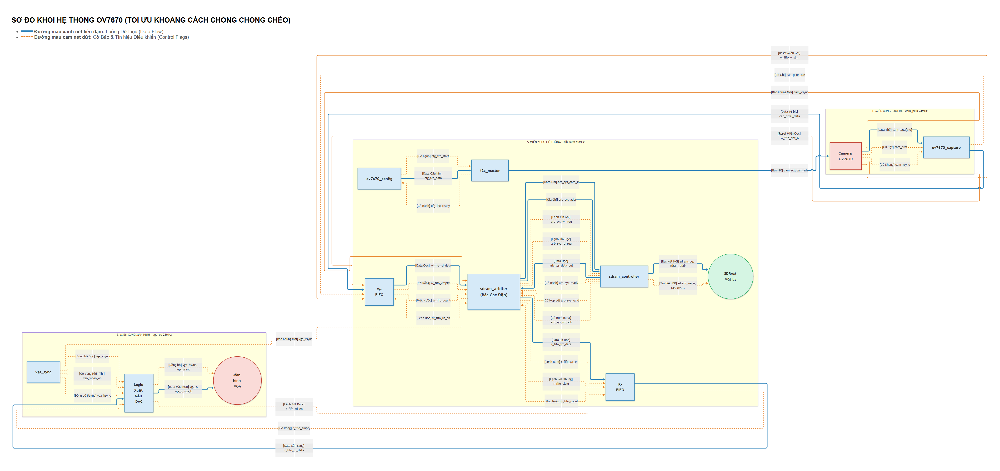
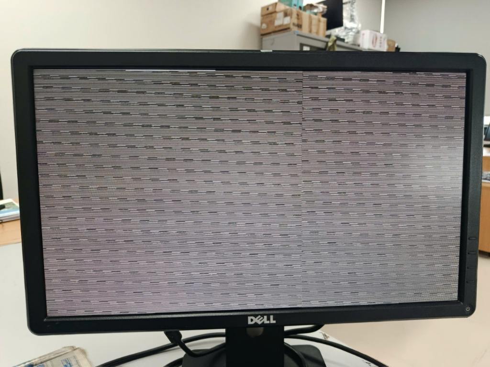
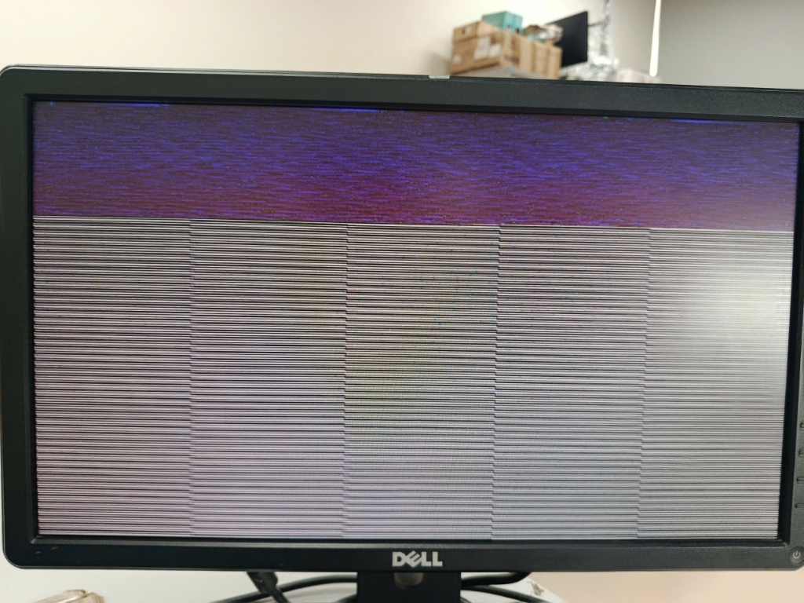
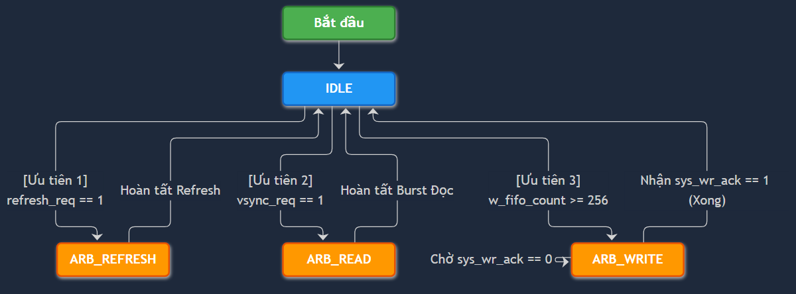
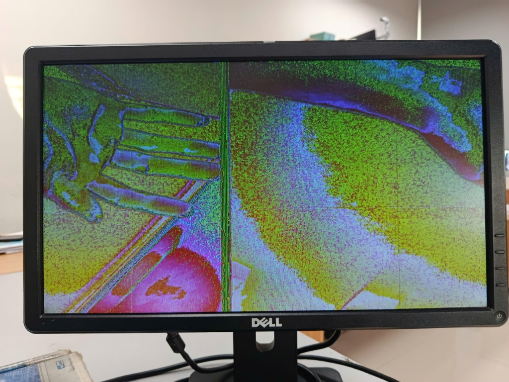
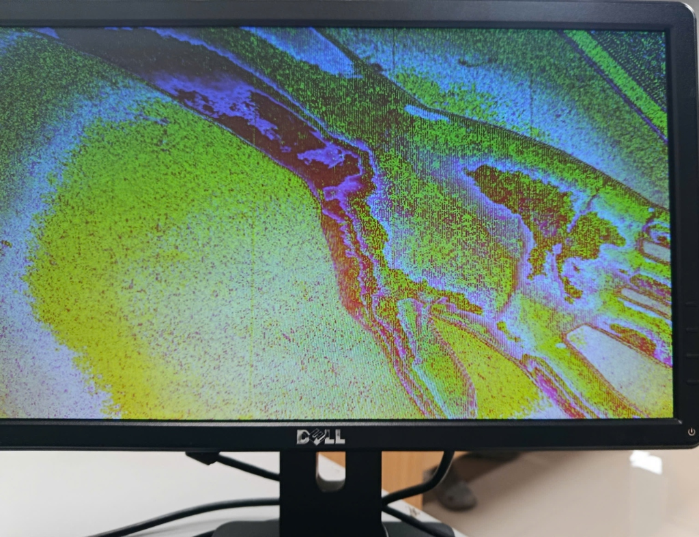
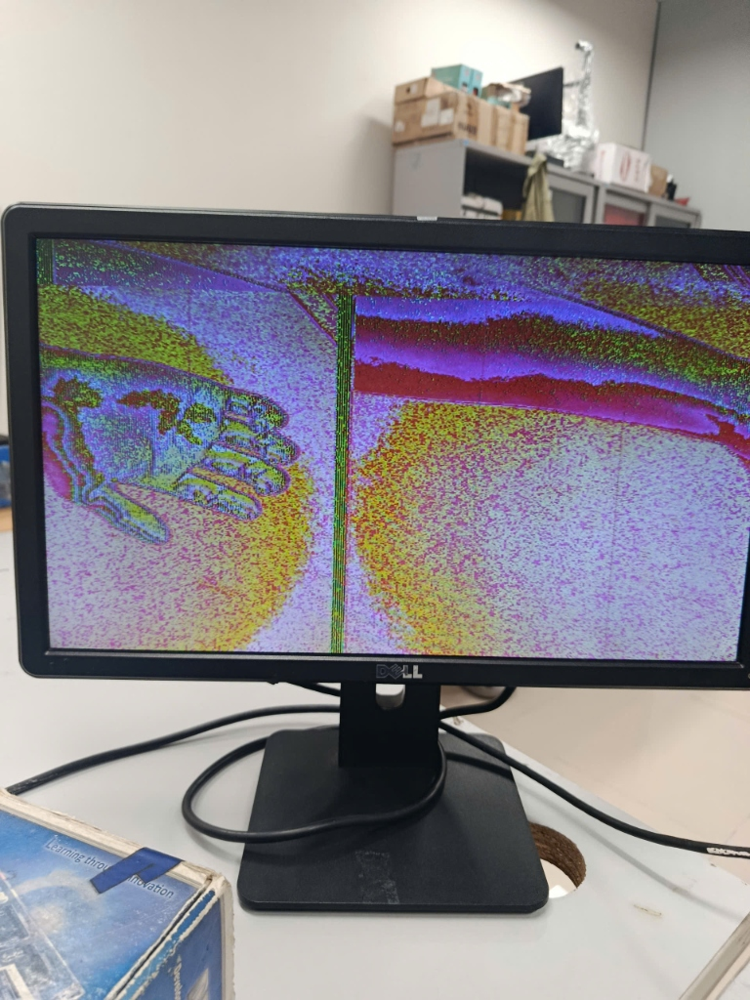
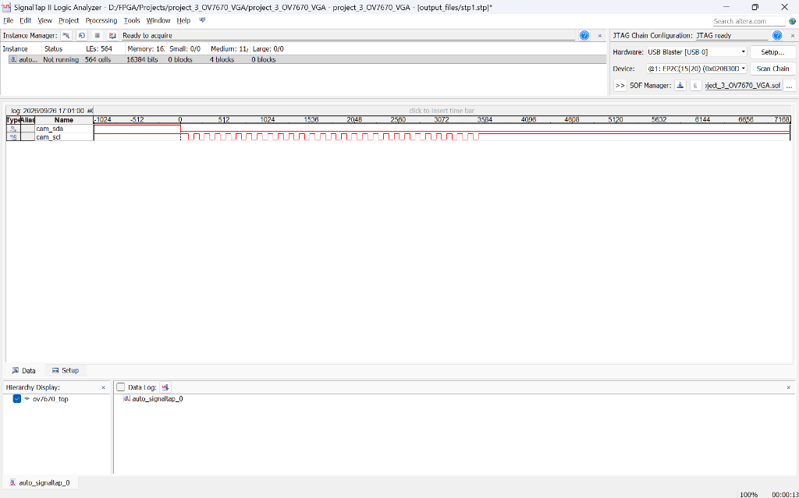
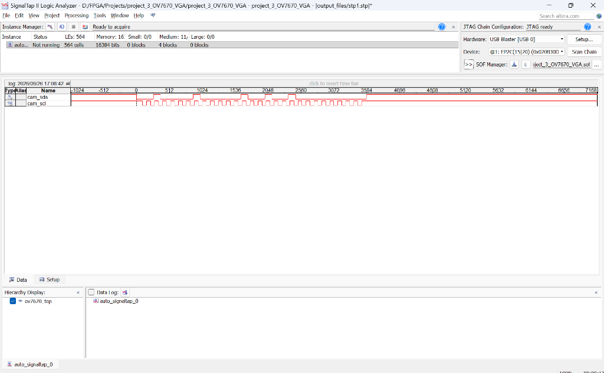
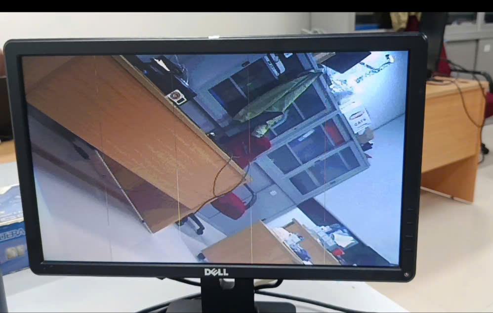

BÁO CÁO KỸ THUẬT TOÀN DIỆN: DỰ ÁN HỆ THỐNG CAMERA OV7670 TRÊN FPGA
Hệ thống thu nhận, xử lý và hiển thị Video thời gian thực 640x480 qua SDRAM Ping-Pong Buffer trên KIT Terasic DE1
💡 GHI CHÚ QUAN TRỌNG: Báo cáo này tổng hợp lại toàn bộ kiến trúc hệ thống, lý thuyết cốt lõi về chuẩn I2C, giao thức DVP, bộ đệm Ping-Pong SDRAM và đặc biệt là Nhật ký Debug 5 Chặng Sinh Tử để đưa hệ thống từ chỗ màn hình nhiễu rác đến khi xuất ra hình ảnh thực tế hoàn hảo.
I. TỔNG QUAN KIẾN TRÚC HỆ THỐNG
🗺️ SƠ ĐỒ KHỐI HỆ THỐNG TOÀN DIỆN (FULL SYSTEM TOPOLOGY)
Dưới đây là hình ảnh toàn cảnh hệ thống:

Chú thích luồng hệ thống:
- Luồng Cấu Hình (I2C): Mạch
ov7670_confignạp mã từ ROM vàoi2c_masterđể thiết lập các thanh ghi Camera (phân giải, màu sắc) ngay sau khi boot. - Luồng Video Thu Nhận: Camera phun dữ liệu 8-bit. Mạch
ov7670_capturegom 2 byte thành 1 Pixel 16-bit và đẩy vào ngõ ghi củaW-FIFO(chạy theo xung 24MHz của camera). - Bộ Đệm Trung Tâm (SDRAM Arbiter): Đóng vai trò tổng chỉ huy (Gác đập). Arbiter bơm nước (Video data) từ W-FIFO lên SDRAM, đồng thời hút nước từ SDRAM rót vào R-FIFO (chạy theo xung 50MHz).
- Luồng Xuất Hình VGA: Khối
vga_syncsinh ra tọa độ quét (25MHz). Khi tới vùng hiển thị (video_on), khối DAC hút data từ R-FIFO, tách thành kênh R-G-B xuất ra màn hình vật lý. - Cơ Chế Đồng Bộ: Mọi thứ được thắt nút bằng tín hiệu
vsync. Vsync reset hàng loạt các con trỏ địa chỉ, đảm bảo khung hình luôn được quét từ điểm đầu tiên ở góc trên cùng bên trái.
MÔ HÌNH TRỪU TƯỢNG HÓA LUỒNG DỮ LIỆU (DATA FLOW)
Để dễ hình dung hệ thống phần cứng phức tạp này, có thể áp dụng tư duy hình tượng hóa vào 2 nút thắt quan trọng nhất của hệ thống: Khâu hứng dữ liệu (Capture) và Khâu phân luồng bộ nhớ (Arbiter).
1. Trạm đóng gói kẹo 16-gram (Mô hình DVP Capture)
Hãy tưởng tượng luồng chảy dữ liệu từ Camera đi vào FPGA giống như một Trạm đóng gói kẹo nằm trên một băng chuyền chạy với tốc độ PCLK (24MHz).
-
Băng chuyền chạy: Camera liên tục ném lên băng chuyền từng viên kẹo 8-gram (D[7:0]).
-
Luật chơi (HREF): Trạm đóng gói chỉ được phép gắp kẹo đưa vào phễu khi đèn báo hiệu HREF sáng (báo hiệu dữ liệu hợp lệ).
-
Nhào nặn (Lắp ráp): Vì mục tiêu là đóng gói 16-gram (Pixel RGB565), máy phải chờ gắp viên kẹo thứ nhất (Byte cao - cất vào túi tạm), sau đó đợi đến nhịp tiếp theo để gắp viên kẹo thứ hai (Byte thấp).
-
Xuất xưởng: Ngay tại nhịp thứ 2, máy ép 2 viên kẹo 8-gram lại với nhau thành 1 gói 16-gram (pixel_data), lập tức bật đèn xanh (pixel_valid = Write Enable) và quăng tọt vào thùng chứa phía sau (chính là W-FIFO). Quá trình này lặp lại liên tục cho đến hết hàng.
-
Qua ngày mới (VSYNC): Khi cờ VSYNC phất lên, giám đốc xưởng hô to: "Xong một bức tranh kẹo! Quét sạch phễu chứa, reset bộ đếm, chuẩn bị đón ca mới!".
2. Mô hình "Người Gác Đập và Hệ thống Thủy lợi" (Giải phẫu luồng dữ liệu SDRAM Ping-Pong)
Để giải quyết bài toán chênh lệch tốc độ giữa Camera (chảy chậm, ngắt quãng) và Màn hình VGA (hút nước liên tục, tốc độ cực cao), hệ thống SDRAM Arbiter được thiết kế như một Hệ thống thủy lợi quy mô lớn, trong đó mỗi module phần cứng đóng một vai trò vật lý rất rõ ràng:
-
W-FIFO (Bồn chứa trung chuyển đầu nguồn): Camera giống như một con suối tự nhiên, dòng chảy (PCLK) không đều đặn và có những lúc ngắt quãng (Blanking). W-FIFO chính là một Bồn chứa nước nhỏ đặt ngay dưới thác nước. Khối DVP Capture liên tục hứng từng giọt nước từ Camera đổ vào bồn này. Mục đích của bồn W-FIFO là gom đủ một lượng nước nhất định (ví dụ: 256 giọt) để chuẩn bị cho một lần xả lớn, tránh việc phải vận chuyển từng giọt một cách lắt nhắt gây lãng phí băng thông bộ nhớ.
-
SDRAM (Hồ chứa thủy điện khổng lồ - Ping-Pong Bank): Đây là lõi của hệ thống. SDRAM giống như một Hồ chứa nước khổng lồ có khả năng chứa hàng triệu khối nước (đủ không gian cho toàn bộ khung hình 640x480). Tuy nhiên, để tránh việc nước sạch mới bơm vào bị lẫn lộn với nước cũ đang xả ra (gây hiện tượng xé hình ngang - Tearing), hồ chứa này được chia làm 2 nửa phân lô độc lập: Hồ A (Bank 0) và Hồ B (Bank 1).
- Khi Hồ A đang mở cổng cho Camera đổ nước mới vào, thì Hồ B sẽ đóng cổng nạp và chỉ mở cổng xả để cấp nước cho VGA.
-
Khi cờ VSYNC phất lên (báo hiệu Camera đã vẽ xong 1 khung hình), chức năng của 2 hồ lập tức đảo ngược cho nhau (Ping-Pong). Hai luồng nước Đọc/Ghi sẽ không bao giờ giẫm chân lên nhau!
-
R-FIFO (Tháp nước áp lực cao khu dân cư): Màn hình VGA giống như một khu dân cư đông đúc. Khu dân cư này tiêu thụ nước liên tục với tốc độ cực kì khủng khiếp (25MHz) và tuyệt đối không chấp nhận việc bị ngắt quãng (nếu ngắt quãng, màn hình sẽ bị lệch pixel và nhiễu tĩnh ngay lập tức). Do đó, ta không thể nối ống trực tiếp từ Hồ SDRAM (vốn có độ trễ lớn và thỉnh thoảng phải dừng lại để tự sạc điện - Auto Refresh) đến khu dân cư được. R-FIFO chính là một Tháp nước áp lực cao đặt ngay sát khu dân cư VGA. Tháp nước này luôn được giữ ở mức đầy, đảm bảo áp lực nước xả xuống VGA luôn mạnh mẽ, trơn tru và liên tục không ngừng nghỉ.
-
SDRAM Arbiter (Người Gác Đập tẫn mẫn): Đây chính là bộ não điều phối (Finite State Machine - FSM) của toàn bộ hệ thống. Arbiter đóng vai trò là một Người Gác Đập tay cầm bộ đàm, đứng giữa Hồ khổng lồ (SDRAM) và hai đầu bồn chứa (W-FIFO, R-FIFO). Người Gác Đập gác đập tuân thủ một quy tắc sinh tử:
- Người Gác Đập nhìn về phía Tháp nước R-FIFO. Tháp nước luôn được ưu tiên tuyệt đối. Hễ thấy Tháp nước vơi đi một nửa, Người Gác Đập lập tức bật siêu máy bơm, rút đúng 256 khối nước từ Hồ SDRAM bơm tốc hành lên Tháp (Burst Read) để cứu khát cho khu dân cư VGA.
- Khi Tháp nước R-FIFO đã an toàn, Người Gác Đập mới quay sang nhìn Bồn trung chuyển W-FIFO. Nếu thấy bồn W-FIFO đã tích đủ 256 giọt nước từ suối Camera, Người Gác Đập sẽ mở van để hút trọn 256 giọt nước đó đổ vào Hồ SDRAM (Burst Write).
- Nếu thiếu đi Người Gác Đập (hoặc Người Gác Đập bị treo máy do lỗi logic mất tín hiệu phao đo), Tháp nước R-FIFO sẽ cạn kiệt, VGA sẽ "chết khát" và màn hình sẽ ngay lập tức hiện đầy bùn đất (dữ liệu rác)!
Sau khi đã nắm vững bức tranh tổng quát và mô hình dữ liệu trừu tượng, trọng tâm tiếp theo sẽ đi sâu vào mổ xẻ chi tiết từng khối phần cứng, bắt đầu từ Khối khởi tạo cấu hình I2C.
II. THIẾT KẾ KHỐI CẤU HÌNH I2C
BÁO CÁO KIẾN TRÚC: LÕI GIAO TIẾP I2C (OVERSAMPLING 4X)
Báo cáo này tổng hợp lại những nguyên lý thiết kế cốt lõi của khối i2c_master và i2c_clk_gen, giải thích tại sao kiến trúc này đạt chuẩn công nghiệp và an toàn tuyệt đối về mặt định thời (Timing).
1. Bản chất Vật lý của I2C và Giới hạn Tần số
Dù FPGA (Master) chạy ở xung nhịp hệ thống rất cao (50MHz), ta tuyệt đối không thể ném 50MHz ra đường dây SCL của I2C. Có 2 lý do chí mạng:
- Giới hạn của Camera (Slave): Mạch giải mã SCCB/I2C của phần lớn cảm biến (như OV7670) chỉ hỗ trợ tốc độ tối đa là 400 KHz.
- Đặc tính Mạch Cực máng (Open-Drain): Giao thức I2C bắt buộc phải dùng điện trở kéo lên (Pull-up Resistor). Khi FPGA thả dây SCL, điện áp mất một khoảng thời gian đáng kể để "bò" từ 0V lên 3.3V (do hằng số thời gian RC). Nếu chạy ở 50MHz, điện áp chưa kịp nhích lên đã bị dập xuống, dẫn đến tín hiệu bị phẳng lỳ ở 0V.
Do đó, FPGA đóng vai trò như một Hộp số (Gearbox), lấy xung 50MHz đếm chậm lại để gõ nhịp 400 KHz ra đường dây SCL.
2. Bí kíp "Clock Enable" (Tick 4x) - Tại sao không dùng bộ chia Clock?
Để tạo ra 400 KHz, cách ngây thơ nhất là chia 50MHz ra một xung vuông 400 KHz (Ripple Clock) và dùng nó cấp cho FSM. Tuy nhiên, kỹ thuật này gây ra trễ pha và lỗi Timing trầm trọng.
Kiến trúc chuẩn công nghiệp giải quyết bằng cách chia hệ thống thành 2 khối đồng bộ hoàn toàn với 50MHz:
Khối i2c_clk_gen (Nhạc trưởng)
Khối này đếm xung 50MHz và tạo ra một xung chớp nhoáng (Tick) kéo dài đúng 1 chu kỳ 50MHz. Xung chớp này xuất hiện với tần số nhanh gấp 4 LẦN tần số I2C cần thiết (ví dụ: I2C là 400KHz thì Tick là 1.6MHz).
Khối i2c_master (Nhạc công)
Bên trong i2c_master có một bộ đếm tick_cnt chạy từ 0 đến 3. Mỗi lần nghe tiếng Tick, nó tăng thêm 1. Nhờ chia 1 chu kỳ I2C ra làm 4 phách, Master có thể vẽ ra sóng SCL và chốt dữ liệu SDA một cách an toàn tuyệt đối:
- Phách 0 (
tick_cnt == 0): KéoSCL = 0. Tín hiệu chạm đáy. Đây là lúc an toàn để Master thay đổi dữ liệu trên dây SDA. - Phách 1 (
tick_cnt == 1): KéoSCL = 1. Tín hiệu vọt lên đỉnh (Cạnh lên). - Phách 2 (
tick_cnt == 2): GiữSCL = 1. Đỉnh điểm của sóng. Dữ liệu SDA lúc này ổn định nhất, không có nhiễu. Đây là thời điểm vàng để đọc SDA (VD: đọc bit ACK từ Slave). - Phách 3 (
tick_cnt == 3): KéoSCL = 0. Tín hiệu rơi xuống đáy (Cạnh xuống), kết thúc 1 chu kỳ bit.
Nhìn từ bên ngoài, SCL lên xuống như một xung Clock 400KHz. Nhưng nhìn từ bên trong FPGA, SCL chỉ là một chân tín hiệu (Data) đang bật tắt dưới sự kiểm soát của FSM 50MHz.
3. PHỤ LỤC CHUYÊN SÂU: GIẢI MÃ CHÂN INOUT VÀ KIẾN TRÚC VẬT LÝ CỦA HỆ THỐNG (SDRAM vs I2C)
Trong thiết kế phần cứng FPGA, từ khóa inout (Tri-state Buffer) được sinh ra với mục đích duy nhất: Tiết kiệm chân cắm vật lý. Nó ép một sợi dây đồng phải đóng cả 2 vai trò Phát (TX) và Nhận (RX) theo kiểu Bộ đàm (Half-Duplex).
Tuy nhiên, đằng sau cùng một từ khóa inout trong code Verilog, bản chất vật lý của Bus dữ liệu SDRAM và Bus điều khiển I2C lại khác biệt nhau một trời một vực.
3.1. Sự khác biệt cốt lõi: Mạch CMOS Push-Pull (SDRAM) vs Cực máng hở Open-Drain (I2C)
A. Bus Dữ liệu SDRAM: Cấu trúc Push-Pull CMOS (Luân phiên Bơm/Thả nổi)
- Bản chất phần cứng: Ở cả 2 đầu của đường dây truyền (phía con chip FPGA và phía con chip SDRAM) đều được trang bị một cặp "cơ bắp" Transistor khổng lồ: con PMOS nối trực tiếp lên Nguồn (3.3V) và con NMOS nối trực tiếp xuống Đất (GND). Quy luật sinh tử của Bus 2 chiều là: Khi anh này gồng cơ bắp bơm điện, anh kia bắt buộc phải thả lỏng (Thả nổi/High-Z) để hứng.
- Cơ chế dịch Code (Synthesizing) tại FPGA: Khi Kỹ sư gõ:
assign SDRAM_DQ = (sdram_wr_en) ? w_fifo_data : 16'bz;Phần mềm Quartus sẽ đấu thẳng 2 biếnsdram_wr_en(Cờ điều khiển) vàw_fifo_data(Dữ liệu) vào "Bộ não" điều khiển cặp PMOS/NMOS bên trong FPGA.
Quá trình giao tiếp luân phiên được điều phối bởi Trọng tài (Arbiter): Bên trong lõi FPGA, W-FIFO và R-FIFO là 2 module hoàn toàn tách biệt với các đường dữ liệu độc lập. Tuy nhiên, khi giao tiếp với thẻ nhớ SDRAM bên ngoài, cả 2 module này bắt buộc phải dùng chung cụm 16 chân vật lý SDRAM_DQ trên vỏ con chip FPGA. Vì chỉ có 1 đường Bus duy nhất, khối Trọng tài (Arbiter) phải chủ động can thiệp để chia thời gian (Half-Duplex), đảm bảo 2 quá trình Ghi/Đọc không bao giờ giẫm chân lên nhau.
- Chiều 1: Bơm dữ liệu từ W-FIFO vào SDRAM (Quá trình Ghi): Khối Trọng tài cấp quyền Ghi, mạch logic bên trong lập tức ép cụm chân SDRAM_DQ của FPGA tuyệt đối không được thả nổi. Lúc này, cụm chân SDRAM_DQ đóng vai trò là "Máy bơm": Nó nhìn vào biến
w_fifo_data(hút từ W-FIFO), bật PMOS hoặc NMOS để bơm điện áp cực mạnh ép dữ liệu ra đường dây. Để hứng được luồng dữ liệu vũ bão này, con chip SDRAM bên ngoài phải tự động cúp cầu dao, thả nổi cặp PMOS/NMOS của chính nó để há miệng cho dòng điện từ FPGA chảy tọt vào lõi bộ nhớ. - Chiều 2: SDRAM đẩy dữ liệu dội ngược về R-FIFO (Quá trình Đọc): Khối Trọng tài chủ động ngắt luồng Ghi và cấp quyền Đọc. Mạch logic (
sdram_wr_en = 0) ra lệnh khóa tử, ép cụm chân SDRAM_DQ của FPGA rơi vào trạng thái thả nổi (Trở kháng cao - High-Z). Ngay khi FPGA buông tay, con chip SDRAM đoạt quyền kiểm soát đường dây. Nó tự nhìn vào từng ô nhớ bên trong lõi, bật PMOS/NMOS của nó để bơm dòng điện dội ngược về phía FPGA.
Đối với người mới, "Thả nổi" (High-Z) nghe giống như một bức tường cách điện tuyệt đối, ngăn chặn mọi dòng điện. Thực chất, ngay sau lớp vỏ đồng của chân I/O, mạch điện được chia làm một Ngã ba hình chữ Y:
- Nhánh Phát (Output Driver - "Cái máy bơm"): Chứa cặp PMOS/NMOS. Câu lệnh thả nổi
16'bzCHỈ tác động lên nhánh này, cúp cầu dao ngắt "Máy bơm" ra khỏi chân đồng. Bức tường cách điện (High-Z) chỉ nằm ở đường đi ra này. - Nhánh Thu (Input Receiver - "Cái vôn kế"): Câu lệnh
wire read_data = SDRAM_DQ;chính là nhánh này. Nó đấu song song với Nhánh Phát và đi thẳng vào lõi FPGA. Cấu tạo của nó giống hệt một chiếc đồng hồ VOM (trở kháng đầu vào cực lớn). Nó KHÔNG BAO GIỜ bị ngắt, không chặn dòng điện, mà chỉ "chạm nhẹ" vào chân đồng để đo xem áp suất điện đang là 3.3V hay 0V 24/24.
Một điểm "xoắn não" kinh điển trong Verilog: Nếu máy phát nhả ra
16'bz, thì máy thu sẽ nhận được gì? Cần nhớ rằng, chữ Z không phải là một điện áp vật lý, nó chỉ mang ý nghĩa "Rút tay lại". Biến wire của Nhánh Thu luôn phản chiếu mù quáng sự thật vật lý đang diễn ra trên dây đồng:
- Trường hợp 1 (Quá trình Đọc SDRAM): FPGA thả nổi (Z), nhưng SDRAM đang tích cực bơm chuỗi bit
1010. Sợi dây vật lý mang điện áp 1010, biến wire sẽ đọc được hoàn hảo dữ liệu1010. - Trường hợp 2 (Hệ thống nghỉ ngơi - Idle): Cả FPGA và SDRAM đều thả nổi. Sợi dây đồng bị bỏ hoang, biến thành một cái "ăng-ten" hút nhiễu vô tuyến từ môi trường. Lúc này biến wire sẽ đọc ra toàn RÁC (Garbage data) - các bit 0 và 1 nhảy múa loạn xạ!
r_fifo_wr_en. Khi hệ thống nghỉ ngơi, Trọng tài gán cờ này bằng 0, đóng chặt cửa R-FIFO chặn đứng toàn bộ đống rác. Nó chỉ mở cửa (r_fifo_wr_en = 1) vào đúng những nhịp Clock mà nó biết chắc chắn SDRAM đang gửi dữ liệu chuẩn xác!
- Đặc điểm: Tốc độ thần tốc (hàng trăm MHz). Nhưng rủi ro ĐOẢN MẠCH RẤT CAO nếu mạch Trọng tài (Arbiter) viết sai, dẫn đến việc FPGA và SDRAM vô tình cùng bật Transistor bơm điện vào nhau.
B. Dây I2C Camera: Cấu trúc Open-Drain (Xả điện & Điện trở kéo lên)
- Cấu tạo phần cứng: Bên trong chân SDA của Camera và FPGA chỉ có ĐÚNG 1 con Transistor NMOS nối xuống Đất (GND). Bắt buộc phải đấu một con Điện trở Pull-up (một đầu nối vào dây SDA, đầu kia nối thẳng lên nguồn điện 3.3V VCC của bo mạch).
- Tín hiệu điều khiển: Phụ thuộc trực tiếp vào dữ liệu muốn truyền:
assign SDA = (data == 1'b0) ? 1'b0 : 1'bz; - Cách hoạt động vật lý:
- Khi truyền số 0: FPGA/Camera bật con NMOS. Dây SDA bị nối thẳng xuống Đất, điện áp sập về 0V.
- Khi truyền số 1 HOẶC Lắng nghe: Cả FPGA và Camera đều ngắt con NMOS. Chân I/O bị thả nổi (Trạng thái Z). Lúc này, Nguồn điện 3.3V (VCC) trên bo mạch sẽ truyền dòng điện đi xuyên qua con Điện trở Pull-up để nạp điện cho đường dây SDA, kéo điện áp dâng lên mức 3.3V. Điện trở không tự sinh ra điện, nó chỉ đóng vai trò là "cái van" giới hạn dòng điện từ nguồn 3.3V, đảm bảo khi Camera kéo dây xuống Đất sẽ không làm chập cháy nguồn điện chính của hệ thống.
- Đặc điểm: Tốc độ rất chậm. Nhưng TUYỆT ĐỐI AN TOÀN, không bao giờ đoản mạch dù nhiều chip cùng nói một lúc.
3.2. Tại sao chúng ta BẮT BUỘC phải tuân theo sự "lề mề" của I2C?
Dù trên board mạch DE1 chỉ có duy nhất 1 Master (FPGA) và 1 Slave (Camera OV7670), chúng ta vẫn không thể dùng chế độ Push-Pull tốc độ cao để giao tiếp. Lý do nằm ở 3 nguyên tắc bất di bất dịch sau:
A. Giới hạn Silicon từ Nhà sản xuất (Bài toán dùng chung "Đường ống" SDA)
Con chip OV7670 được hãng OmniVision thiết kế không phải để chạy đơn độc, mà để lắp vào bo mạch điện thoại di động – nơi có hàng chục thiết bị (Camera, La bàn, Cảm biến ánh sáng...) cùng "khoét lỗ" cắm chung vào MỘT đường ống đồng (Bus I2C) duy nhất.
- Hiểm họa nếu đúc chip theo chuẩn Push-Pull: Hãy tưởng tượng mỗi con chip được trang bị một máy bơm (PMOS) và một van xả đáy (NMOS). Nếu Cảm biến A đang muốn truyền mức 1 (Bật máy bơm đẩy điện 3.3V vào ống), nhưng Cảm biến B do lỗi nhịp Clock lại muốn truyền mức 0 (Mở toang van xả xuống Đất GND) vào đúng tích tắc đó. Dòng điện 3.3V khổng lồ từ A sẽ phóng thẳng tắp đâm xuyên qua van xả của B. Cú đoản mạch này sẽ nướng chín cả hai con chip ngay lập tức!
- Giải pháp Open-Drain (Sự im lặng an toàn): Để hàng chục con chip sống chung hòa bình, I2C tước bỏ hoàn toàn "Máy bơm 3.3V" của tất cả các linh kiện. Bên trong chân SDA của Camera OV7670 chỉ được đúc ĐÚNG một cái Van xả đáy xuống Đất. Nhờ vậy, định nghĩa về mức 1 và 0 thay đổi hoàn toàn:
- Khi A muốn truyền mức 1: Nó chỉ việc Đóng kín van xả (Thả nổi/High-Z). Nó trở nên tàng hình, hoàn toàn cách ly và không bơm bất kỳ dòng điện nào vào đường ống. Logic 1 lúc này do Điện trở Pull-up bên ngoài tự bơm vào.
- Sự an toàn tuyệt đối: Lúc này dù Cảm biến B có mở toang van xả (Truyền mức 0), thì dòng điện từ vòi Pull-up 3.3V chỉ trôi tuột qua B xuống Đất. Cảm biến A đang đóng kín cửa nên không bị bất kỳ dòng điện nào đâm sầm vào. Hiện tượng đụng độ giao thông (Bus Collision) bị triệt tiêu 100%! Vì phần cứng Camera OV7670 đã bị đúc cứng bằng Silicon theo chuẩn Open-Drain này, Kỹ sư FPGA khi viết code bắt buộc phải dùng
1'bz(Thả nổi) để tương thích, tuyệt đối không được phép làm trái luật.
B. Ngăn chặn thảm họa Xung đột Giao thông trong Máy trạng thái (FSM)
Trong giao thức I2C, đường truyền có những khoảnh khắc giao thời mà quyền điều khiển buộc phải chuyển từ tay Master (FPGA) sang Slave (Camera). Ví dụ điển hình nhất là cờ ACK (Bit thứ 9).
- Góc nhìn từ Code Verilog (FSM): Sau khi FPGA truyền xong 8 bit dữ liệu, Máy trạng thái (FSM) của FPGA bắt buộc phải chuyển sang trạng thái WAIT (Chờ đợi). Tại trạng thái này, Code Verilog bắt buộc phải ép chân I/O vào trạng thái thả nổi (
assign SDA = 1'bz). Nhờ sự thả nổi này, con Camera mới có không gian tĩnh lặng để giật dây SDA xuống 0V (GND) nhằm báo cáo cờ ACK. - Hiểm họa nếu dùng Push-Pull: Giả sử Kỹ sư code sai FSM, khi vào trạng thái WAIT thay vì thả nổi lại xuất lệnh bơm điện (
SDA = 1'b1) để "giữ mức cao". Đúng lúc đó, Camera kéo dây xuống Đất để báo ACK → Đoản mạch cháy chip! - Kết luận: Nhờ luật Open-Drain, phần cứng tạo ra một "bức tường bảo hiểm" ngăn chặn hoàn toàn nguy cơ đoản mạch dù cho Kỹ sư có sơ suất viết sai logic của Máy trạng thái đi chăng nữa.
C. Tuyệt chiêu "Đa điện áp" (Voltage Level Shifting)
Một lý do thiên tài nữa khiến các nhà sản xuất ép I2C phải dùng Open-Drain (Thả nổi + Kéo lên) chính là khả năng giao tiếp xuyên biên giới điện áp giữa Master và Slave. Trong thực tế, Bo mạch chủ (Master) có thể hoạt động ở mức điện áp 5V, trong khi con Camera (Slave) nhạy cảm chỉ chịu được tối đa 3.3V.
- Nếu dùng Push-Pull: Khi Master 5V muốn truyền số 1, nó sẽ bơm thẳng dòng điện 5V sang Camera. Con Camera 3.3V sẽ lập tức bị quá áp và nổ tung.
- Với Open-Drain thần thánh: Cả Master và Slave đều bị khóa tính năng bơm điện. Chúng chỉ có thể kéo dây xuống Đất (GND) hoặc Thả nổi. Để tạo ra mức 1, Kỹ sư phần cứng chỉ cần treo con Điện trở Pull-up lên nguồn 3.3V. Lúc này, toàn bộ sợi dây SDA sẽ chỉ dao động an toàn từ 0V đến tối đa 3.3V. Master 5V (nhờ cơ chế nhận diện logic thông minh) vẫn hiểu 3.3V là logic 1, trong khi con Camera 3.3V thì hoàn toàn bình an vô sự!
CHỐT HẠ (Kinh nghiệm xương máu): Khi làm việc bên trong lõi của FPGA, Kỹ sư là những vị thần có thể đặt ra mọi luật lệ. Nhưng một khi tín hiệu thò ra khỏi chân I/O để giao tiếp với linh kiện thương mại bên ngoài (Commercial ICs), Kỹ sư bắt buộc phải hạ mình tuân thủ 100% tài liệu kỹ thuật (Datasheet) của nhà sản xuất. Không có ngoại lệ ở thế giới vật lý!
4. Phân biệt "Đồng bộ (Synchronous)" và "Bất đồng bộ (Async CDC)"
Khối Hộp số I2C này KHÔNG hề sử dụng FIFO Bất đồng bộ (Dual-Clock Async FIFO), và cũng KHÔNG xử lý nhiễu đa xung nhịp (Clock Domain Crossing - CDC).
- Toàn bộ quá trình tạo sóng SCL đều nằm hoàn toàn trong "Vương quốc 50MHz" của FPGA. Thiết kế này là Đồng bộ hoàn toàn (Fully Synchronous).
- Khi nào mới cần Async FIFO? Async FIFO chỉ xuất hiện khi có 2 vương quốc độc lập. Cụ thể trong dự án OV7670 này, Async FIFO sẽ được dùng ở khối Hứng ảnh (DVP Capture), nơi mà xung nhịp
PCLK(do Camera tự sinh ra) đụng độ với xung nhịp50MHzcủa FPGA. Lúc đó, FIFO đóng vai trò làm bãi đệm triệt tiêu sự lệch pha giữa 2 hệ thống độc lập này.
Nghệ thuật Thiết kế I2C Deep Dive
Giao thức I2C là một tiêu chuẩn phổ biến, nhưng để triển khai nó trên nền tảng logic số (như FPGA) một cách trơn tru, mạnh mẽ thì lại là một "nghệ thuật" thực sự. Tài liệu này chắt lọc những tư duy cốt lõi về thiết kế I2C Master, đặc biệt là khi giao tiếp với các thiết bị như Camera OV7670.
1. Cơ chế 4 Ticks của I2C: Tại sao phải chia làm 4 phách?
Khi viết máy trạng thái (FSM) cho I2C, một kỹ thuật cực kỳ hiệu quả là chia một chu kỳ xung nhịp SCL (I2C Clock) thành 4 phách (4 ticks). Thay vì cố gắng thay đổi dữ liệu (SDA) và xung nhịp (SCL) cùng một lúc, hệ thống rải chúng ra:
- Tick 1 (SDA Change): Đổi trạng thái dây SDA khi dây SCL đang ở mức thấp. Việc thay đổi SDA lúc SCL thấp đảm bảo tính hợp lệ của dữ liệu (tránh vô tình tạo ra điều kiện Start/Stop).
- Tick 2 (SCL Rise): Kéo dây SCL lên mức cao.
- Tick 3 (SDA Sample/Read): Đọc giá trị trên dây SDA. Khoảng thời gian từ Tick 2 tới Tick 3 là thời gian SCL duy trì ở mức cao và SDA đã cực kỳ ổn định, là thời điểm hoàn hảo nhất để chốt (latch) dữ liệu từ Slave.
- Tick 4 (SCL Fall): Kéo dây SCL xuống mức thấp trở lại, chuẩn bị cho chu kỳ tiếp theo.
Việc chia thành 4 phách tạo ra những khoảng Margin an toàn, tránh vi phạm thời gian Setup (Setup time) và Hold (Hold time), giúp đường truyền cực kỳ bền bỉ kể cả khi nhiễu.
2. Nghệ thuật Clock Enable: Ảo giác tốc độ
Nhiều kỹ sư nhầm tưởng rằng để tạo ra I2C 400kHz, họ phải dùng mạch chia xung (Clock Divider/PLL) tạo ra một xung nhịp clock 400kHz độc lập để cung cấp cho module I2C. Điều này dẫn đến sự cố tồi tệ về Clock Domain Crossing (CDC).
Sự thật về ảo giác tốc độ: Toàn bộ hệ thống logic I2C Master thực chất vẫn chạy hoàn toàn trên xung nhịp gốc (ví dụ: 50MHz của hệ thống). Để đáp ứng tốc độ 400kHz của cảm biến, hệ thống sử dụng một bộ đếm (Counter) liên tục đếm trên nền xung 50MHz. Cứ mỗi (50MHz / (400kHz * 4)) chu kỳ, bộ đếm sẽ bật một cờ tick_4x (chỉ kéo dài trong 1 chu kỳ 50MHz).
Biến tick_4x này hoạt động như một cờ Clock Enable. Khối I2C Master luôn lấy clock 50MHz, nhưng chỉ chuyển trạng thái (chuyển sang Tick kế tiếp của I2C) khi tick_4x được bật. Việc này đảm bảo logic hoạt động hoàn toàn đồng bộ, an toàn, và chính xác mà không sinh ra một xung clock mới.
3. Giao tiếp Handshake (Bắt tay): Mối tình giữa Config và Master
Trong thiết kế cấu hình Camera, hệ thống có khối OV7670_Config (chứa các thông số thanh ghi ROM) và khối i2c_master (thực thi việc truyền I2C). Khối Config chạy cực kỳ nhanh (mỗi xung 50MHz là 1 bước), trong khi I2C Master mất hàng ngàn xung 50MHz mới truyền xong một byte. Làm sao để chúng làm việc với nhau mà không ách tắc?
Giải pháp nằm ở tín hiệu Handshake (Bắt tay) gồm 2 cờ: start và ready.
- Khối i2c_master bình thường luôn giữ cờ ready = 1 để thông báo "nhóm phát triển rảnh".
- Khối OV7670_Config khi cần truyền một lệnh cấu hình, nó đặt dữ liệu lên bus và bật cờ start = 1 trong đúng 1 chu kỳ clock.
- Ngay khi thấy start, i2c_master lập tức kéo ready = 0 (Báo bận) và bắt đầu quá trình truyền tốn thời gian của mình.
- Trong lúc đó, khối OV7670_Config nằm chờ (Wait State) cho đến khi ready quay trở lại mức 1.
- Khi truyền xong, i2c_master trả ready = 1. OV7670_Config thấy vậy liền lấy dữ liệu kế tiếp ra và chu kỳ lại tiếp tục.
Nhờ cơ chế Handshake tinh tế này, dữ liệu không bao giờ bị dồn ứ hay mất mát, đảm bảo mọi thanh ghi đều được lập trình tuần tự và trọn vẹn, không hề "lỗi nhịp".
Sau bước khởi tạo I2C, cảm biến bắt đầu xuất luồng dữ liệu quang học liên tục. Nhiệm vụ cốt lõi tiếp theo của hệ thống FPGA là thu nhận luồng dữ liệu này một cách toàn vẹn thông qua giao thức DVP Capture và điều phối qua bộ đệm SDRAM.
III. LÝ THUYẾT DVP CAPTURE VÀ PING-PONG SDRAM
Khối DVP (Digital Video Port) Capture đóng vai trò là giao diện trực tiếp đầu tiên giữa FPGA và cảm biến quang học. Đây là cánh cổng thu nhận luồng dữ liệu liên tục từ thế giới thực. Bất kỳ sự sai lệch nào về xung nhịp (Clock) tại khối này đều sẽ dẫn đến việc sai lệch toàn bộ cấu trúc điểm ảnh của khung hình.
1. Kiến trúc tổng thể và Giải phẫu tín hiệu DVP chi tiết
A. Nhận diện Đầu vào (Input) – "Nguyên liệu thô từ mỏ":
Khối DVP Capture không tự sinh ra dữ liệu, nó đóng vai trò là "trạm kiểm lâm" đứng ở cửa rừng.
- Nguồn gốc: Tín hiệu đến trực tiếp từ phần cứng của Camera Sensor đi qua các chân GPIO vật lý trên board mạch FPGA.
- Thành phần cốt lõi:
- PCLK (Pixel Clock): Nhịp tim của camera (~24MHz). Cứ mỗi xung nhịp, camera sẽ nhả ra một khối dữ liệu nhỏ.
- VSYNC (Vertical Sync): Cờ lệnh của tổng tư lệnh báo hiệu bắt đầu một khung hình (Frame) mới. (High = Blanking, Low = Active Frame).
- HREF (Horizontal Reference): Cờ báo hiệu của đội trưởng dòng (Line) cho biết dữ liệu đang truyền là hợp lệ.
- D[7:0]: Bus dữ liệu 8-bit, chở từng mảnh màu sắc thô.
💡 GHI CHÚ QUAN TRỌNG: Góc Nhìn Lịch Sử & Bản Chất Vật Lý: Tại sao lại có Vùng Đen (Blanking)?
Tín hiệu điều khiển DVP thực chất mang theo "DNA" di truyền từ thời đại Tivi CRT (Ống phóng tia âm cực). Trong hệ thống CRT cổ điển, súng bắn electron sau khi quét xong một dòng (từ trái sang phải) cần một khoảng thời gian tắt tia sáng để "lùi nòng" về lề trái chuẩn bị quét dòng tiếp theo (H-Blanking), cũng như lùi từ đáy màn hình chạy ngược lên đỉnh màn hình (V-Blanking).
Camera OV7670 tuy là chip cảm biến CMOS kỹ thuật số hiện đại, nhưng vẫn được thiết kế để giả lập y chang chuẩn Analog truyền thống này nhằm đảm bảo tính tương thích vạn năng.
Nguy cơ phần cứng tiềm ẩn: Trong khoảng thời gian "súng đang lùi" này (khi
HREF = 0), các đường dây dữ liệuD[7:0]bị thả nổi và xả ra toàn "rác" điện tử (Garbage Data). Do đó, việc thiết kế bẫyif (href == 1'b1)chính là màng lọc sinh tử — nếu bỏ qua cờ này, bộ đệm Async FIFO của hệ thống sẽ nuốt trọn rác, làm xô lệch tọa độ của toàn bộ các điểm ảnh ở các hàng bên dưới!
B. Nhận diện Đầu ra (Output) – "Sản phẩm tinh chế xuất xưởng":
Khối này đứng trước Async FIFO và làm nhiệm vụ nhồi dữ liệu vào FIFO.
- Đích đến: Đẩy thẳng vào cửa ngõ của Async FIFO (Khối đệm chuyển vùng Clock).
- Thành phần:
- pixel_data (16-bit): Dữ liệu điểm ảnh RGB565 đã được lắp ráp hoàn chỉnh.
- pixel_valid (1-bit): Tín hiệu Write Enable (WEN) ra lệnh cho Async FIFO: "Có điểm ảnh chuẩn rồi, mở cửa cất vào kho ngay!".
C. Mô hình hóa Luồng dữ liệu (Data Flow) – "Trạm đóng gói kẹo trên băng chuyền":
Hãy tưởng tượng luồng chảy dữ liệu của khối DVP Capture giống như một Trạm đóng gói kẹo 16-gram nằm trên một băng chuyền chạy với tốc độ PCLK.
1. Băng chuyền chạy: Camera liên tục ném lên băng chuyền từng viên kẹo 8-gram (D[7:0]).
2. Luật chơi (HREF): Trạm đóng gói chỉ được phép gắp kẹo đưa vào phễu khi đèn báo hiệu HREF sáng (dữ liệu hợp lệ).
3. Nhào nặn (Lắp ráp): Vì mục tiêu là đóng gói 16-gram (Pixel RGB565), máy phải chờ gắp viên kẹo thứ nhất (Byte cao - cất vào túi tạm), sau đó đợi đến nhịp tiếp theo để gắp viên kẹo thứ hai (Byte thấp).
4. Xuất xưởng: Ngay tại nhịp thứ 2, máy ép 2 viên kẹo 8-gram lại với nhau thành 1 gói 16-gram (pixel_data), lập tức bật đèn xanh (pixel_valid) và quăng tọt vào thùng chứa phía sau (chính là Async FIFO). Quá trình này lặp lại liên tục cho đến hết hàng.
5. Qua ngày mới (VSYNC): Khi cờ VSYNC phất lên, giám đốc xưởng hô to: "Xong một bức tranh kẹo! Quét sạch phễu chứa, reset bộ đếm, chuẩn bị đón ca mới!".
2. Nghệ thuật ghép ảnh RGB565: Bức Tranh 16-bit Từ Mảnh Ghép 8-bit
Camera OV7670 xuất ảnh theo chuẩn màu RGB565, tức là một điểm ảnh (Pixel) cần đến 16-bit dữ liệu (5 bit Đỏ, 6 bit Xanh lá, 5 bit Xanh dương). Tuy nhiên, cáp truyền dữ liệu phần cứng D[7:0] của Camera lại chỉ rộng có 8-bit! Để giải quyết giới hạn vật lý này, Camera bắt buộc phải truyền 1 Pixel trong 2 nhịp xung nhịp (PCLK) liên tiếp.
Vấn đề đặt ra là: Làm sao phần cứng FPGA biết được cái Byte 8-bit đang chạy tới là nửa đầu (Byte Cao) hay nửa sau (Byte Thấp) của điểm ảnh để mà ghép cho đúng?
Giải pháp: Linh hồn của module Capture - Cờ luân phiên byte_sel
Kỹ sư thiết kế đã sử dụng một thanh ghi 1-bit tên là byte_sel đóng vai trò như một con lắc đồng hồ, lật qua lật lại ở mỗi nhịp PCLK hợp lệ (khi href == 1) để điều phối thuật toán "Gắp kẹo 2 nhịp" như sau:
- Bước 0: Đồng bộ hóa (Reset)
Mỗi khi một khung hình mới bắt đầu (cờvsyncnháy lên), hệ thống bắt buộc phải gán cờbyte_sel = 0. Thao tác này cực kỳ quan trọng để "căn lề", đảm bảo byte đầu tiên rơi xuống của một bức tranh luôn luôn được định nghĩa là Byte Cao. - Bước 1: Bắt Byte Cao (Khi
byte_sel == 0)
Ở nhịp PCLK đầu tiên, Camera đẩy 8-bit nửa đầu của điểm ảnh ra dây D[7:0] (Gồm 5 bit Đỏ và 3 bit Xanh lá).
FPGA bắt lấy 8-bit này và cất tạm vào một chiếc túi lưu trữ nội bộ tên làbyte_high.
Lúc này, cờ cho phép ghi vào FIFO (we) vẫn bị khóa ở mức 0 vì điểm ảnh chưa được lắp ráp hoàn thiện.
Sau đó, con lắcbyte_seltự động cộng thêm 1, lật sang trạng thái 1. - Bước 2: Bắt Byte Thấp & Đóng gói xuất xưởng (Khi
byte_sel == 1)
Ở nhịp PCLK tiếp theo, Camera thè ra 8-bit nửa cuối của điểm ảnh (3 bit Xanh lá còn lại và 5 bit Xanh dương).
Ngay lập tức, FPGA sử dụng phép toán nối chuỗi (Concatenation) trong Verilog:dout = {byte_high, d}. Nó đem cái túibyte_highđang chờ sẵn ghép với 8-bitdvừa tới để đúc thành một từ 16-bit RGB565 hoàn chỉnh!
Điểm ảnh đã thành hình, FPGA lập tức vung cờ báo hiệu hợp lệ (we = 1) để nhồi viên kẹo 16-bit này vào bộ đệm W-FIFO.
Đồng thời, con lắcbyte_selđược cộng thêm 1. Vì chỉ có độ rộng 1-bit, phép toán1 + 1sẽ làm nó tràn và tự động quay về 0. Hệ thống trở lại Bước 1, há miệng chờ điểm ảnh tiếp theo!
3. LUẬT THÉP: CÁC CẠM BẪY DỄ MẮC PHẢI KHI THU THẬP ẢNH DVP
Sau khi hiểu cách khối Capture hoạt động, đây là những cái bẫy chết người trong quá trình điều khiển Camera bằng các tín hiệu VSYNC, HREF mà chỉ những người có kinh nghiệm thực chiến mới nhận ra:
Nguy cơ: Lúc khởi động, tín hiệu chưa ổn định, hệ thống rất dễ bắt nhầm "Byte Thấp" làm "Byte Cao". Hệ quả: Màu sắc bị hoán đổi loạn xạ (Byte Swap), màn hình nhiễu hột cát.
vsync vào khối always. Bất cứ khi nào cờ vsync bật lên (báo hiệu chuyển giao khung hình mới), ta lập tức ép cứng biến luân phiên byte_sel <= 1'b0. Điều này tạo ra một "điểm neo" tuyệt đối, đảm bảo ngay khi href bật lên ở dòng đầu tiên của bức tranh, byte thu được chắc chắn 100% được xếp vào vị trí Byte Cao.
Nguy cơ: Khi hệ thống vừa được cấp nguồn hoặc Camera vừa nhận lệnh Reset, các mạch điện Analog và thuật toán tự động bên trong Camera (như Cân bằng trắng AWB, Phơi sáng tự động AGC) chưa thể hoạt động trơn tru ngay lập tức. Cảm biến giống như một người vừa ngủ dậy, bị chói mắt và cần một khoảng thời gian tĩnh để "điều tiết". Nếu khối FPGA háu đói, cấu hình và bắt ngay những khung hình đầu tiên này đẩy lên VGA, màn hình sẽ bị chớp nháy lóa sáng, sai màu, hoặc đầy nhiễu rác.
ov7670_config.v)! Ta đã thiết kế một thanh ghi delay_cnt 20-bit đếm ngược 500.000 nhịp xung clock (tương đương 10ms ở tần số 50MHz).
Đoạn mã kích hoạt bộ đếm ngược:
// Cần trễ 10ms ở trạng thái IDLE (khi khởi động) hoặc khi gửi lệnh reset camera (1280)
if (state_current == STATE_IDLE || (state_current == STATE_SEND && rom_data == 16'h1280)) begin
delay_cnt <= 20'd500_000; // Đặt giá trị 500,000 để đếm ngược tạo trễ 10ms
end else if (delay_cnt > 0) begin
delay_cnt <= delay_cnt - 1'b1; // Giảm dần bộ đếm
endSTATE_IDLE: begin
// Đợi 10ms sau khi cấp nguồn rồi mới bắt đầu (i2c_ready = 1 và delay_cnt = 0)
if(i2c_ready && delay_cnt == 0) begin
state_next = STATE_CHECK;
end
endNguy cơ: Các loại cảm biến Camera khác nhau quy định sự phân cực của VSYNC và HREF hoàn toàn khác nhau. Nếu cứ nhắm mắt copy code mù quáng, cái "Trạm đóng gói kẹo" của hệ thống sẽ chỉ đứng đóng gói toàn rác!
if (vsync == 1).
4. Cầu nối Async FIFO: Vượt Qua Khoảng Cách Không Gian - Thời Gian (Clock Domain)
Sau khi thu thập thành công, khối DVP Capture (hoạt động hoàn toàn dựa trên xung PCLK ~24MHz của Camera) phải gửi dữ liệu cho miền đọc của SDRAM (hoạt động ở xung nội bộ 50MHz). Để đưa điểm ảnh 16-bit từ "cõi 24MHz" sang "cõi 50MHz" một cách an toàn, hệ thống bắt buộc phải dùng một Async FIFO (Hàng đợi Bất đồng bộ).
Đây là ranh giới sống còn của hệ thống với những quy tắc thiết kế vô cùng khắt khe:
-
Cạm bẫy Clock Domain Crossing (CDC): Tuyệt đối không lấy chuỗi dữ liệu (
pixel_data) ném thẳng vào RAM hoặc bộ xử lý ảnh mà bỏ qua Async FIFO. Hậu quả: Xung nhịp 50MHz bên miền Đọc hoàn toàn có thể lấy mẫu trúng ngay lúc dữ liệu từ miền 24MHz đang rơi vào vùng Setup/Hold time. Vi phạm định thời này sẽ sinh ra lỗi Metastability (Trạng thái lơ lửng / Siêu ổn) khiến Flip-Flop không thể quyết định được mức 0 hay 1, từ đó đọc ra toàn rác và làm treo cứng toàn bộ hệ thống! -
Nghệ thuật đếm bằng Mã Gray (Gray Code): Để biết FIFO đã đầy hay rỗng, hệ thống phải truyền biến đếm số lượng qua lại giữa 2 miền Clock. Kỹ sư IC tuyệt đối cấm dùng mã Nhị phân (Binary) để đếm, vì mã Nhị phân khi đổi số (ví dụ từ 3 lên 4 là
011sang100) bị lật nhiều bit cùng lúc, rất dễ gây ra hiện tượng đọc rác (Glitch). Async FIFO bắt buộc phải dùng Mã Gray, lật đúng 1 bit ở mỗi lần đếm, chặn đứng hoàn toàn nguy cơ đọc sai con trỏ khi băng qua miền xung nhịp!
5. Nâng cấp Kiến trúc: Tại sao phải chuyển từ Single Buffer lên Ping-Pong Frame Buffer?
Trong các thiết kế xử lý ảnh cơ bản, người ta thường dùng phương pháp Single Buffer (Đệm 1 kho). Nguyên lý rất đơn giản: Khối Camera cứ việc chép đè điểm ảnh mới vào một vùng SDRAM duy nhất, còn khối VGA thì cứ hút dữ liệu từ vùng đó ra để bắn lên màn hình. Nhưng đối với hệ thống Camera thời gian thực, thiết kế "1 kho chung" này sẽ dẫn đến một thảm họa thị giác.
5.1. Thảm họa chênh lệch tốc độ (Screen Tearing)
- Tốc độ "bơm" của Camera (Write): Camera chạy bằng xung PCLK ~24MHz, cần 2 nhịp mới ra được 1 pixel. Tốc độ thực tế Camera vẽ xong 1 bức tranh là 30fps (30 khung hình/giây).
- Tốc độ "hút" của VGA (Read): Màn hình 640x480@60Hz quét pixel liên tục với xung 25MHz. Tốc độ VGA vẽ xong 1 bức tranh lên màn hình là 60fps (60 khung hình/giây).
- Hệ quả (VGA chạy vượt mặt Camera): Vì khối VGA chạy nhanh gấp đôi Camera, khi bắt chúng dùng chung 1 kho SDRAM, VGA sẽ chép dữ liệu cũ và vượt qua cả tọa độ mà Camera đang viết dữ liệu mới. Màn hình sẽ hiển thị một sản phẩm lỗi: Nửa trên là ảnh của khung hình Mới, nửa dưới vẫn là ảnh của khung hình Cũ. Ranh giới giữa 2 nửa này sinh ra một vết nứt gãy ngang màn hình, gọi là hiện tượng Xé hình (Tearing).
5.2. Giải pháp tối thượng: Ping-Pong Frame Buffer
Để giải quyết triệt để, hệ thống quy hoạch con chip SDRAM khổng lồ thành 2 phân vùng hoàn toàn độc lập: Bank 0 và Bank 1.
Mô hình Trừu tượng (Hệ thống 2 Bể nước A và B): Dòng suối Camera hì hục bơm nước (Write) vào Bể A. Cùng lúc đó, khối hiển thị VGA ung dung hút nước (Read) từ Bể B ra để dùng. Hai quá trình này diễn ra cách biệt, đảm bảo dữ liệu mà khối VGA lấy ra luôn là một khối nước (khung hình) đã được nạp đầy trọn vẹn, triệt tiêu hoàn toàn sự xáo trộn hay chắp vá. Ngay khi Bể A vừa được bơm đầy (báo hiệu bằng cờ VSYNC), hệ thống gạt cần hoán đổi: Khối VGA chuyển sang hút nguồn nước mới nhất từ Bể A, còn luồng Camera lại quay sang bơm nạp vào Bể B vừa cạn!
5.3. Bằng chứng Thực tế và Phân tích Logic Code (sdram_arbiter.v)
1. Cờ chọn Bank nằm ở đâu trong chuỗi bit?
Với bức ảnh VGA 640x480, ta cần 307.200 ô nhớ, tức là cần 19 bit địa chỉ (addr[18:0]). Hệ thống sử dụng bit thứ 19 của tổng địa chỉ SDRAM 22-bit làm Cờ Chọn Bể (Bank Select):
// Khi VGA yêu cầu Đọc: Cờ bank_read sẽ quyết định rút dữ liệu từ Bể 0 hay Bể 1
sys_addr <= {2'b00, bank_read, read_addr[18:0]};
// Khi Camera yêu cầu Ghi: Cờ bank_write quyết định chép dữ liệu vào Bể 0 hay Bể 1
sys_addr <= {2'b00, bank_write, write_addr[18:0]};Chỉ bằng 1 bit 0 hoặc 1, dữ liệu được tách biệt vào 2 không gian bộ nhớ cách nhau hơn 524 ngàn địa chỉ, bảo vệ 100% tính toàn vẹn của khung hình.
2. Logic "Gạt cần" hoán đổi Bể (Swap Logic) hoạt động ra sao?
Sự hoán đổi luân phiên này được vận hành bởi một tập hợp biến trạng thái tinh gọn, được kích hoạt vào đúng tích tắc Sườn xuống (Falling Edge) của tín hiệu VSYNC.
Từ điển Biến số sử dụng:
camera_vsync_d1, camera_vsync_d2(1-bit): Các thanh ghi trễ (D-FlipFlop) lưu lịch sử 2 nhịp quá khứ của chân VSYNC.camera_vsync_falling(1-bit wire): Cờ kích hoạt. Nó chỉ chớp lên mức 1 duy nhất trong 1 chu kỳ khi trạng thái cũ (d2) là 1 và mới (d1) rớt xuống 0.bank_write(1-bit): Bể (0 hoặc 1) mà Camera đang trực tiếp bơm dữ liệu vào.bank_completed(1-bit): Bể chứa bức ảnh nguyên vẹn vừa mới được bơm xong (Thành phẩm).write_addr(19-bit): Biến đếm tọa độ ô nhớ của SDRAM.
Cơ chế gạt cần của Camera (Khi vừa kết thúc 1 bức ảnh):
wire camera_vsync_falling = (camera_vsync_d2 && !camera_vsync_d1);
if (camera_vsync_falling) begin
bank_completed <= bank_write; // [1] Cập nhật Thành phẩm: Lấy Bể vừa bơm xong đóng dấu chứng nhận
bank_write <= ~bank_write; // [2] Đảo Bể bơm: Lật bit (0->1, 1->0) để Camera bơm sang Bể đối diện
write_addr <= 19'd0; // [3] Reset tọa độ bơm về 0
endCơ chế gạt cần của VGA (Khi vẽ xong màn hình hiện tại):
if (vsync_req) begin
bank_read <= bank_completed; // Lấy Bể thành phẩm mới nhất ra để vẽ
read_addr <= 19'd0; // Reset tọa độ hút về 0
end5.4. 💡 Góc nhìn Chuyên sâu: Tại sao khối Arbiter phải dùng d1, d2 để bắt VSYNC?
Nhiều người sẽ thắc mắc: Tại sao ở khối ov7670_capture chỉ cần viết if (vsync == 1) là đủ, mà ở sdram_arbiter lại phải đẻ ra 2 thanh ghi d1, d2 để bắt sườn xuống? Câu trả lời nằm ở bản chất của Hành động và Miền xung nhịp:
Lý do 1: Bắt Mức (Level) vs Bắt Sườn (Edge)
- Ở khối Capture (ov7670_capture.v): Ta muốn Ghim giữ các giá trị tọa độ ở mức 0 trong suốt thời gian Camera nghỉ giải lao (Blanking). Việc khối lệnh này bị gọi liên tục hàng chục ngàn lần trong lúc
vsyncbằng 1 là điều ta mong muốn để ghim chặt hệ thống ở trạng thái an toàn. Do đó, lệnhifkiểm tra theo Mức (Level) là hoàn toàn chính xác:if (vsync == 1'b1) begin // Bắt Mức: VSYNC cứ giữ ở mức 1 là lệnh bên trong cứ chạy addr <= 19'd0; // Liên tục ghim địa chỉ về 0 byte_sel <= 1'b0; // Liên tục ghim cờ chọn byte về 0 we <= 1'b0; // Liên tục ghim cờ ghi về 0 (khóa an toàn) end - Ở khối Arbiter (sdram_arbiter.v): Ta muốn thực hiện hành động Đảo trạng thái Bể luân phiên (
bank_write <= ~bank_write). Nếu ta cũng dùng lệnh bắt Mứcif (camera_vsync == 1)như trên, lệnh đảo bit này sẽ bị thực thi hàng triệu lần liên tiếp, tráo Bể điên cuồng như máy xay sinh tố. Ta bắt buộc phải dùng d1, d2 để bắt Sườn (Edge) – so sánh Hiện tại và Quá khứ – nhằm đảm bảo việc gạt cần hoán đổi chỉ diễn ra ĐÚNG 1 LẦN DUY NHẤT cho mỗi khung hình.
Tín hiệu
vsync sinh ra từ Camera chạy ở 24MHz, nhưng khối Arbiter chạy ở 50MHz. Đưa thẳng một tín hiệu khác Clock Domain vào mạch logic sẽ vi phạm Setup/Hold time, sinh ra Metastability. Hai thanh ghi d1, d2 mắc nối tiếp nhau tạo thành một mạch Double-Flop Synchronizer kinh điển để cách ly và triệt tiêu lỗi lơ lửng này!
Quá trình triển khai lý thuyết thiết kế lên phần cứng vật lý luôn đi kèm với các thách thức về định thời (Timing) và đồng bộ. Dưới đây là Nhật ký khắc phục sự cố (Debug Log) ghi lại toàn bộ quá trình tối ưu hóa hệ thống, minh chứng cho phương pháp cô lập lỗi và phân tích tín hiệu (Waveform Analysis).
IV. NHẬT KÝ SỬA LỖI (BUG HUNTING & DEBUGGING)
NHẬT KÝ SỬA LỖI CHẶNG 1 - HIỆN TƯỢNG MÀN HÌNH RÁC VÀ "CÁI BỒN NƯỚC KHÔNG PHAO"
1. Hình ảnh hiện tượng

(Miêu tả: Màn hình hiển thị nhiễu hạt sọc ngang, có đường cắt dọc ở giữa X=320, hình ảnh tĩnh không thay đổi dù che hay mở camera).2. Nguyên nhân gốc rễ (Lỗi Logic Trọng tài & Khởi động Camera)
Dự án gặp phải 2 vấn đề nghiêm trọng chạy song song:
-
Lỗi 1 (Camera chết lâm sàng): Cấp nguồn xong, vi mạch FPGA chạy quá nhanh, bắn lệnh cấu hình SCCB (I2C) ngay lập tức. Kết quả là Camera không kịp khởi động, chưa sẵn sàng nhận lệnh nên đã "bỏ qua" toàn bộ cấu hình.
-
Lỗi 2 (Treo máy trạng thái Arbiter do mất phao đo): Sử dụng nhầm module
async_fifocho R-FIFO (Read FIFO từ SDRAM ra VGA). Vì moduleasync_fifonày không có cổngcountxuất ra, dây tín hiệur_fifo_countbị bỏ lửng (Floating = 0).
3. Mô hình Trừu tượng (Mạng Lưới Bơm Nước)
Hãy tưởng tượng hệ thống FPGA của hệ thống là một mạng lưới cấp nước:
- SDRAM: Là một cái Hồ Chứa Nước khổng lồ ở giữa.
- Camera: Là dòng suối liên tục chảy nước thô vào. Nước này được hứng tạm vào cái Xô Đầu Vào (W-FIFO).
- Màn hình VGA: Là một khu dân cư tiêu thụ nước liên tục không ngừng nghỉ. Nước cấp cho dân được chứa trong một cái Tháp Nước Đầu Ra (R-FIFO).
- SDRAM Arbiter: Là Người Gác Đập (Trọng tài). Người Gác Đập này đứng ở giữa, tay cầm van xả và phải làm cùng lúc 2 nhiệm vụ:
- Nhiệm vụ 1: Bơm nước từ Hồ Chứa (SDRAM) lên Tháp Nước (R-FIFO) để dân (VGA) có nước xài.
- Nhiệm vụ 2: Hút nước từ Xô Đầu Vào (W-FIFO) đổ vào Hồ Chứa (SDRAM) để cất trữ ảnh từ Camera.
Luật làm việc của Người Gác Đập rất rõ ràng: Ưu tiên số 1 là dân không được chết khát (VGA mất dữ liệu là xé hình ngay). Người Gác Đập phải nhìn vào cái phao đo mực nước (count) trên Tháp Nước R-FIFO.
- Nếu nước trong Tháp cạn (dưới 768 lít): Người Gác Đập cuống cuồng bơm nước từ Hồ lên Tháp.
- Nếu nước trong Tháp đã đầy (trên 768 lít): Dân đã đủ nước xài tạm, Người Gác Đập mới thảnh thơi quay sang hút nước từ Camera đổ vào Hồ.
💥 Bi kịch của lỗi sọc rác vừa rồi:
Lúc trước, Agent 2 đã xây cho khu dân cư một cái Tháp Nước loại async_fifo. Đặc điểm của cái tháp này là kín bưng, KHÔNG HỀ CÓ phao đo mực nước (count bị bỏ trống). Vì không có dây tín hiệu báo về, Người Gác Đập luôn nhìn thấy thông số "Mực nước = 0". Người Gác Đập hoảng loạn tột độ, tưởng dân đang chết khát, nên dành 100% thời gian để bơm nước từ Hồ (SDRAM) lên Tháp (VGA). Người Gác Đập không bao giờ dám quay lưng lại để múc nước từ suối Camera!
Hậu quả: Camera chảy bao nhiêu nước đều bị vứt bỏ, Hồ chứa SDRAM thì không có giọt nước mới nào, chỉ chứa toàn bùn đất cặn bã từ lúc mới xây (dữ liệu rác lúc cấp nguồn). Khu dân cư VGA thì bị ép uống cái bùn đất đó -> Sinh ra màn hình nhiễu sọc!
4. Tại sao lại đem fifo_sync trở lại?
- Khôi phục Phao Đo Mực Nước (
count): Modulefifo_synclà một cái tháp nước "thông minh" có tích hợp sẵn châncountbáo mực nước chính xác theo từng chu kỳ. Khi lắp nó vào, Người Gác Đập (Arbiter) thấy được mức nước thực tế, biết lúc nào tháp đã đầy để yên tâm quay sang xử lý data cho Camera. - Về mặt thiết kế Clock:
- Cái Xô Đầu Vào (W-FIFO) BẮT BUỘC phải dùng
async_fifovì nước từ suối Camera chảy vào theo nhịp riêng (cam_pclk), còn Người Gác Đập làm việc theo nhịp của Hồ (clk_50m). - Nhưng cái Tháp Nước Đầu Ra (R-FIFO) thì khác! Người Gác Đập bơm nước vào Tháp bằng nhịp
clk_50m, và khu dân cư VGA cũng rút nước ra bằng chính nhịpclk_50m(có chốt cửavga_ce). Vì Đầu Vào và Đầu Ra chạy cùng một nhịp (Đồng bộ - Sync), hệ thống không cần dùngasync_fifophức tạp, mà dùngfifo_synclà chuẩn bài toán nhất, vừa nhẹ logic, vừa có sẵn biếncount.
BÁO CÁO KỸ THUẬT CHẶNG 2: NGHẼN BĂNG THÔNG GHI SDRAM & BẢN ĐỒ SỬA CHỮA HỆ THỐNG
1. Hình ảnh thực tế chặng 2

- Hiện trạng quan sát: - Khoảng 1/3 màn hình phía trên (~160 - 180 dòng quét) đã hiển thị tín hiệu thực tế từ ống kính Camera (có phân vùng sáng tối thực của trần nhà/phòng làm việc). - Tuy nhiên, hình ảnh bị nhiễu sọc ngang rất nặng, xé hình và ám sắc tím. - 2/3 màn hình phía dưới vẫn trơ trơ dải nhiễu tĩnh mặc định của chip SDRAM.2. Minh chứng đối chiếu: Tại sao Project Đọc Ảnh (UART) chạy được mà Project Camera lại gãy?
Để minh định rõ ràng vì sao hệ thống SDRAM hiện tại bị coi là đang chạy ở chế độ Single Write, hệ thống hãy trích xuất trực tiếp code gốc từ D:\FPGA\Projects\project_2_SDRAM_VGA\SDRAM_VGA_final:
Bằng chứng code gốc trong sdram_controller.v:
Tại dòng 134-135 của file gốc Project 2:
// Mode: CAS=3, Read=Full Page, Write=Single Access (Bit 9 = 1)
sdram_addr <= 12'h237;
Và tại dòng 203-204:
WRITE_DATA: begin
// Write là Single Access
Ý nghĩa phần cứng: Chuẩn JEDEC của chip SDRAM quy định: Khi nạp Mode Register với Bit 9 = 1 (giá trị
12'h237), SDRAM được thiết lập ở chế độ "Burst Read & Single Write". Nghĩa là: Chỉ có chiều ĐỌC (ra VGA) là chạy Burst 256, còn chiều GHI vẫn là ghi từng từ đơn lẻ (Single Access)!
Bảng so sánh tương quan tốc độ giữa 2 Project:
| Tiêu chí so sánh | Project 2: Đọc ảnh qua UART | Project 3: Camera OV7670 | Nhận xét chênh lệch |
|---|---|---|---|
| Nguồn phát dữ liệu | Cổng UART máy tính (115.200 baud) | Cảm biến ảnh OV7670 (PCLK ~24MHz) | Bản chất nguồn phát |
| Tốc độ sinh điểm ảnh | $\approx 5.760$ pixel / giây | $\approx 12.500.000$ pixel / giây | Camera bắn nhanh gấp 2.170 lần UART! |
| Thời gian giữa 2 pixel | $\approx 173.600\,\text{ns}$ ($173,6\,\mu\text{s}$) | $\approx 80\,\text{ns}$ | Khoảng cách dòng dữ liệu |
| Cơ chế ghi SDRAM | Single Write ($200\,\text{ns}$ / pixel) | Single Write ($200\,\text{ns}$ / pixel) | Tái sử dụng nguyên vẹn từ Project 2 |
| Tương quan Băng thông | SDRAM ghi nhanh gấp 868 lần UART | SDRAM ghi chậm hơn 2,5 lần Camera! | Điểm nghẽn chí tử xuất hiện! |
| Trạng thái Bồn W-FIFO | Luôn rỗng (vừa có pixel là ghi ngay) | Tràn bồn liên tục (wfull = 1) |
Vỡ trận bồn đệm |
| Kết quả hiển thị | Ảnh tĩnh mượt mà, đủ khung hình | Chỉ ghi kịp 1/3 khung hình + xé sọc | 2/3 dưới là rác tĩnh |
3. Phân tích 2 câu hỏi kỹ thuật của chuyên gia
1. Tại sao chỉ bơm được ~1/3 màn hình? (Nút thắt cổ chai W-FIFO)
Nguyên nhân gốc rễ không nằm ở xung đột với VGA, mà nằm ở sự nghẽn mạch tại W-FIFO (Bể chứa đầu vào) do tốc độ "Hút" không theo kịp tốc độ "Bơm".
- Tốc độ Camera bơm vào: Camera đẩy dữ liệu liên tục vào W-FIFO với tốc độ 1 pixel / 80ns (Tương đương 12 triệu pixel/giây).
- Tốc độ Trọng tài (Arbiter) hút ra: Ở thiết kế cũ, chiều ghi của SDRAM bị đặt ở chế độ ghi đơn lẻ (Single Access). Việc rút 1 pixel từ W-FIFO đem đi cất vào SDRAM diễn ra rất chậm chạp, tốc độ hút ra tối đa chỉ đạt 5 triệu pixel/giây.
- Hậu quả (Tràn W-FIFO): Vì tốc độ bơm (12M) lớn hơn gấp đôi tốc độ hút (5M), W-FIFO nhanh chóng bị đầy ứ (Overflow) chỉ sau vài dòng quét. Các pixel sinh ra sau đó không còn chỗ chứa nên bị phần cứng vứt bỏ (Drop) vĩnh viễn. Khi xung
VSYNCmới ập tới để bắt đầu khung hình tiếp theo, con trỏ ghi bị giật về 0 trong khi lượng điểm ảnh sống sót mới chỉ đủ lấp đầy khoảng 1/3 chiều cao màn hình.
2. Tại sao hình ảnh lại bị nhiễu sọc ngang rất nặng?
- Mất đồng bộ không gian do rớt Pixel: Khi W-FIFO bị đầy và các điểm ảnh bị vứt bỏ, hệ thống ghi SDRAM không hề biết điều đó. Nó vẫn tiếp tục xếp các điểm ảnh "sống sót" kế tiếp vào ngay sát cạnh nhau.
- Hệ quả là tọa độ của các điểm ảnh bị thụt lùi, xô lệch và tràn từ dòng này sang dòng khác. Khung hình bị xé toạc theo phương ngang, tạo thành các vệt sóng gợn và sọc chuyển động liên tục.
3. Giải pháp: Mở rộng đường ống với Burst Write 256
Để giải quyết nút thắt này, hệ thống Arbiter và SDRAM Controller được thiết kế lại để thay vì rút từng giọt nước, nó sẽ chờ phao báo đủ nước và Hút một lèo 256 pixel liên tục (Burst Write).
Chi tiết các bước thực hiện & Đánh giá hiệu quả:
1. Nâng cấp Bộ đệm W-FIFO (rptr_empty.v & async_fifo.v)
- Thay đổi phần cứng: Xây dựng mạch giải mã Gray-to-Binary để chuyển đổi con trỏ
rq2_wptrthành nhị phân. Tính toán biếnrcount = wptr_bin - rbin_regvà xuất ra cổngoutput wire [10:0] rcount. - Hiệu quả mang lại: Tạo ra một "phao đo mực nước" chính xác cho W-FIFO. Nhờ có cổng
rcount, miền xung nhịp 50MHz giờ đây có thể giám sát theo thời gian thực lượng điểm ảnh (pixel) đang bị tồn đọng bên trong FIFO. Đây là tiền đề bắt buộc để thiết kế logic Burst Write.
2. Nâng cấp Trình điều khiển SDRAM (sdram_controller.v)
- Thay đổi phần cứng: Đổi giá trị nạp Mode Register từ
12'h237(Single Write) sang12'h037(Programmed Burst Write). Xây dựng thêm chu kỳ trạng tháiWRITE_STREAMđể giữ cổng Data mở và ghi liên tục 256 nhịp xung nhịp. - Hiệu quả mang lại (Sửa lỗi 1/3 màn hình): Kỹ thuật này tăng tốc độ hút dữ liệu từ W-FIFO lên mức tối đa (1 pixel / 20ns). Nút thắt cổ chai bị phá vỡ hoàn toàn, W-FIFO không bao giờ bị đầy tràn (Overflow) nữa, qua đó chấm dứt vĩnh viễn hiện tượng mất 2/3 khung hình và xé sọc ngang do rớt pixel.
3. Nâng cấp Trọng tài Điều phối (sdram_arbiter.v)
- Thay đổi phần cứng: Không còn ghi lắt nhắt khi
!w_fifo_empty, Arbiter sẽ chờ điều kiệnw_fifo_count >= 256mới phát tín hiệu yêu cầu ghisys_wr_req. Khi hoàn tất, địa chỉ sẽ nhảy vọt theo khối:write_addr <= write_addr + 256. - Hiệu quả mang lại: Tối ưu hóa băng thông Bus (Bandwidth Optimization). Việc dồn đủ 256 pixel mới đẩy đi 1 lần giúp giảm thiểu thời gian hao phí (Overhead) khi phải liên tục đóng/mở hàng (Row) của thẻ SDRAM, nhường lại lượng lớn thời gian quý giá cho khối VGA đọc dữ liệu ra màn hình.
4. Tích hợp Hệ thống (ov7670_top.v)
- Thay đổi phần cứng: Khai báo dây tín hiệu và nối trực tiếp cổng
rcounttừ moduleu_w_fifosang cổng đầu vàow_fifo_countcủa moduleu_sdram_arbiter. - Hiệu quả mang lại: Hoàn thiện luồng dữ liệu (Data Flow), kết nối thành công tín hiệu giám sát từ khối đệm đầu vào sang bộ não điều phối trung tâm.
Sơ đồ Trạng thái (FSM) của SDRAM Arbiter sau khi cập nhật:
Sự thay đổi cốt lõi được thể hiện ở nhánh ARB_WRITE, thay vì chỉ cần khác rỗng, máy trạng thái giờ đây đòi hỏi sự tích lũy dữ liệu đủ lớn.

CHẶNG 3: SỰ CỐ "BÁC GÁC ĐẬP NHÂN BẢN NƯỚC" VÀ "DÒNG SUỐI HOA MẮT"
1. Hiện tượng tại Khu dân cư (Màn hình VGA)
- Khu dân cư đã nhận đủ nước (đầy đủ khung hình 640x480), nhưng nước lại bị đứt đoạn thành các cột dọc đặc cứng rộng 128px (nhiễu sọc dọc).
- Đặc biệt, sau khoảng 30 giây, các cột nước màu xanh lá này lại từ từ biến chất thành màu tím.
2. Bắt bệnh Hệ thống (Nguyên nhân lỗi)
- Tại sao lại có các cột nhiễu dọc 128px?
Ở chặng 2, ta đã trang bị cho Người Gác Đập (Arbiter) cỗ máy bơm xả cực lớn (Burst Write 256). Đáng lẽ khi bật máy, Người Gác Đập phải liên tục múc 256 gáo nước khác nhau từ Xô Đầu Vào (W-FIFO) để đổ vào Hồ Chứa (SDRAM).
Tuy nhiên, do cơ chế hoạt động của Người Gác Đập bị "đóng băng" (biến
sys_data_inkhai báo là kiểuregtĩnh), Người Gác Đập đã lười biếng: Người Gác Đập chỉ múc đúng 1 gáo nước đầu tiên, rồi "copy/paste" y xì đúc gáo nước đó 256 lần đẩy vào Hồ Chứa! Do khu dân cư (VGA) tiêu thụ mỗi hàng ngang là 640 pixel (640 = 256 * 2 + 128), các gáo nước nhân bản này khi bơm lên màn hình cứ bị xếp chồng và lặp lại, vỡ ra thành 5 cột dọc, mỗi cột chênh nhau đúng 128px. - Tại sao nước từ Xanh lại chuyển thành Tím sau 30s? Dòng suối (Camera) của hệ thống có một bản năng tự nhiên là tự động cân bằng hóa học (Auto White Balance - AWB). Vì Người Gác Đập liên tục nhân bản và đổ vào Hồ những mảng nước màu xanh lá cây đặc quánh, hệ thống AWB của Suối khi nhìn xuống Hồ đã bị "hoa mắt" và hoảng hốt: "Môi trường đang bị dư thừa màu xanh lá quá mức!". Để bù trừ lại, Suối đã tự động tiết ra các chất hóa học màu Đỏ và Xanh dương (tổng hợp lại thành màu Tím Magenta). Quá trình "tiết hóa chất" này mất khoảng 30 giây, đó là lý do màn hình từ từ ngả sang màu tím lịm!
3. Bản đồ Sửa chữa (Cách Fix)
- Chữa bệnh "đóng băng" tay cho Người Gác Đập: Gỡ bỏ trạng thái
regcứng nhắc, thay thế cơ chế này bằng một đường ống dẫn trực tiếp trong suốt (khai báosys_data_inthànhwirevà gán nối thẳng vàow_fifo_data). - Đồng bộ nhịp bơm: Tinh chỉnh lại tiếng còi báo hiệu (nhịp timing của
sys_wr_ack) sao cho khớp tuyệt đối với tốc độ rớt xuống của từng giọt nước trong Xô Đầu Vào. - Kết quả: Giờ đây, mỗi khi Người Gác Đập bật máy bơm 256 nhịp, đường ống sẽ tự động hút trọn vẹn 256 giọt nước tươi mới, liên tục và khác biệt từ Xô (W-FIFO) chảy thẳng tuột vào Hồ Chứa (SDRAM). Không còn nước nhân bản, Dòng Suối (Camera) cũng sẽ hết bị hoa mắt và ngừng tiết ra màu tím!
BÁO CÁO KỸ THUẬT CHẶNG 3 - CHIẾN LƯỢC DEBUG BẰNG PHƯƠNG PHÁP CÔ LẬP VÀ PHÂN TÍCH WAVEFORM
1. Đặt vấn đề

Trong giai đoạn kiểm thử xuất hình, hệ thống gặp phải hiện tượng lỗi hiển thị nghiêm trọng: Hình ảnh xuất ra bị một vết nứt dọc tại cột ~280, khiến nửa trái và nửa phải của màn hình bị đảo lộn vĩnh viễn trên mọi khung hình. Lỗi này xuất hiện ổn định và không tự khắc phục qua các lần quét màn hình tiếp theo, cho thấy đây là một sự sai lệch có tính hệ thống chứ không phải nhiễu ngẫu nhiên. Ngoài ra, hình ảnh còn bị ám màu neon/tím dị thường.
2. Phương pháp tiếp cận (Thu hẹp phạm vi - Tối quan trọng)
Thay vì "mò mẫm" thử sai trên phần cứng (vốn tốn thời gian tổng hợp và không xác định được nguyên nhân gốc rễ), chiến lược debug được triển khai với tư duy phân mảnh hệ thống: * Cô lập các module: Tách biệt luồng dữ liệu thành các khối độc lập (Capture, W-FIFO, Arbiter, SDRAM Controller). * Mô phỏng chính xác (Cycle-accurate): Viết Testbench giả lập tín hiệu camera với định dạng DVP và bơm dữ liệu vào hệ thống. Sử dụng ModelSim để soi Waveform đến từng chu kỳ xung nhịp (clock cycle) tại các điểm nút giao tiếp giữa các module. * Phương pháp này cho phép bắt quả tang hành vi bất thường tại thời điểm tín hiệu chuẩn bị đi vào hoặc đi ra khỏi Async FIFO và SDRAM, mang lại bằng chứng xác đáng thay vì các giả định mơ hồ.
3. Phân tích căn nguyên (Root Cause Analysis - Điểm nhấn suy luận)
Quá trình soi Waveform đã làm sáng tỏ hiện tượng "Rác đọng": * Nguồn gốc lỗi: Do quá trình khởi động chưa ổn định hoặc nhiễu chớp nhoáng khi bật nguồn, một lượng pixel rác (cụ thể là 280 pixel) đã lọt vào Write-FIFO (W-FIFO) trước khi khung hình hợp lệ đầu tiên bắt đầu. * Toán học đằng sau sự tàn phá: * Một khung hình độ phân giải VGA chuẩn chứa $640 \times 480 = 307.200$ pixel. * Trình điều khiển bộ nhớ (SDRAM Controller) ghi dữ liệu theo Burst Length là 256. * Do $307.200 \bmod 256 = 0$ (chia hết tuyệt đối), chu kỳ đọc/ghi diễn ra hoàn hảo. Tuy nhiên, 280 pixel rác ban đầu không bao giờ bị quét đi hay bị ghi đè, vì chúng đóng vai trò như một độ dời (offset) tịnh tiến mọi luồng dữ liệu theo sau nó. * Nó tạo thành một "Độ trễ pha không gian" ($\Delta = 280$) không đổi. Tọa độ điểm ảnh $(0,0)$ của mọi khung hình hợp lệ tiếp theo đều bị đẩy lệch vĩnh viễn đi 280 nhịp địa chỉ trên bộ nhớ SDRAM. Kết quả là pixel thứ 280 của camera lại trở thành pixel số 0 trên màn hình, sinh ra vết nứt dọc chia đôi khung hình.
4. Giải pháp khắc phục
Dựa trên bằng chứng từ Waveform, chiến lược khắc phục tập trung vào việc dọn dẹp FIFO đúng thời điểm:
* Xả đáy (Flush) FIFO: Tận dụng khoảng thời gian "Vertical Blanking" (khi tín hiệu cam_vsync bật lên High) giữa 2 khung hình để thực hiện thao tác reset toàn bộ W-FIFO. Bất kể có bao nhiêu rác đọng trước đó, FIFO đều được làm sạch trước khi khung hình mới bắt đầu.
* Xử lý Clock Domain Crossing (CDC) an toàn: Tín hiệu cam_vsync sinh ra từ miền xung nhịp của camera (PCLK). Tuy nhiên, mặt đọc/ghi của FIFO và logic reset lại hoạt động trong miền xung nhịp hệ thống (50MHz). Để chống lại hiện tượng Metastability, cam_vsync được đi qua 2 tầng Flip-Flop (Double-Flop Synchronizer) trước khi trở thành tín hiệu kích hoạt lệnh reset FIFO.
Chi tiết mã nguồn (Module ov7670_top.v):
// ========================================================================
// [FIX CHẶNG 3: XẢ ĐÁY W-FIFO KHI VSYNC CHUYỂN KHUNG HÌNH]
// ========================================================================
// 1. Khi cam_vsync = 1 (Vertical Blanking giữa 2 khung hình), Camera tạm dừng
// phát dữ liệu. Đây là khoảng lặng vàng để tháo cạn toàn bộ W-FIFO.
// 2. Miền Ghi (wclk = cam_pclk): Dùng trực tiếp (~cam_vsync) làm wrst_n.
// 3. Miền Đọc (rclk = clk_50m): Đồng bộ cam_vsync qua 2 tầng D-FF (CDC chuẩn)
// để tạo rrst_n an toàn, chống hiện tượng bất ổn định (Metastability).
// ========================================================================
// Khai báo 2 thanh ghi Flip-Flop để hứng tín hiệu từ miền Clock khác sang
reg cam_vsync_r1, cam_vsync_r2;
always @(posedge clk_50m or negedge sys_rst_n) begin
if (!sys_rst_n) begin
cam_vsync_r1 <= 1'b0;
cam_vsync_r2 <= 1'b0;
end else begin
// Dịch chuyển qua 2 tầng D-FF để lọc nhiễu Metastability
cam_vsync_r1 <= cam_vsync;
cam_vsync_r2 <= cam_vsync_r1;
end
end
// Tạo tín hiệu Reset độc lập cho 2 mặt của Async FIFO
wire w_fifo_wrst_n = sys_rst_n && (~cam_vsync); // Mặt ghi (Camera domain)
wire w_fifo_rrst_n = sys_rst_n && (~cam_vsync_r2); // Mặt đọc (50MHz domain)
BÁO CÁO KỸ THUẬT CHẶNG 4 - VƯỢT QUA ẢO ẢNH PHẦN MỀM VÀ CHIẾN THẮNG TRÊN TẦNG VẬT LÝ
Tác giả: Kỹ sư Phát triển Hệ thống FPGA (Portfolio Case Study)
1. Điểm khởi đầu đánh lừa (The Illusion of Simplicity)

Chặng 4 bắt đầu với một khung cảnh tưởng chừng như chiến thắng đã cận kề: Vết nứt sọc dọc chia đôi màn hình đã biến mất, hình bóng cánh tay người đã hiện rõ trên màn hình VGA. Thứ duy nhất gây khó chịu còn lại là màu sắc bị ám tím và xanh neon dị thường. Nhìn từ góc độ phần mềm, đây có vẻ như chỉ là một lỗi sai ma trận màu hoặc sai định dạng RGB565. Nhưng thực chất, đây lại là khởi đầu cho một chặng đường debug khắc nghiệt nhất của toàn bộ dự án.
2. Vòng lặp tuyệt vọng và Sự phản bội của Mô phỏng
Để sửa dải màu, việc kiểm tra đã được tiến hành thay đổi và thử nghiệm vô vàn các tập lệnh cấu hình I2C/SCCB khác nhau. Nhưng bất chấp mọi nỗ lực, màu sắc trên màn hình vẫn không hề suy xuyển.
Với tư duy cô lập hệ thống, nhóm phát triển đã tạo hẳn một môi trường mô phỏng chuyên sâu (sim_debug_color) để rà soát từng dòng code. Kết quả mô phỏng (Waveform trên ModelSim) trả về hoàn hảo 100%. Mọi module hoạt động đúng nhịp, dữ liệu trích xuất chính xác. Thế nhưng, khi nạp xuống mạch thật, hình ảnh vẫn giữ nguyên màu sắc hỏng hóc.
Đỉnh điểm của sự hỗn loạn là khi lỗi Chặng 3 (sọc dọc và trôi hình) – một lỗi tưởng chừng đã bị tiêu diệt hoàn toàn – đột ngột quay trở lại.

Việc "Bệnh cũ tái phát cùng bệnh mới" khiến toàn bộ hệ thống trở nên rối tung, đe dọa đánh sập mọi nền tảng logic đã xây dựng.
3. Bước ngoặt tư duy (The Paradigm Shift) và Bằng chứng "Color Bar"
Đứng trước mớ bòng bong, giải pháp được đưa ra là lùi lại một bước và đưa ra một giả thuyết táo bạo: Cái sọc dọc và trôi hình không phải do module code của hệ thống có vấn đề!
Để chứng minh điều đó, quá trình gỡ lỗi đã sử dụng phương án "Color Bar": Ép Camera xuất ra dải màu thử nghiệm nội bộ thông qua duy nhất 1 lệnh COM7 = 0x06.
Tại sao Color Bar lại là bằng chứng ngoại phạm hoàn hảo cho RTL?
Chế độ Color Bar là một bộ tạo ảnh nhân tạo tích hợp sẵn bên trong lõi DSP của OV7670, bỏ qua hoàn toàn mắt kính quang học để xuất ra một dải 8 màu sọc dọc hoàn hảo (Trắng, Vàng, Cyan, Lục, Magenta, Đỏ, Lam, Đen). Nếu màn hình VGA hiện lên được dải màu này một cách mượt mà, tĩnh lặng, không trôi, không xé... thì điều đó chứng minh tuyệt đối 100% rằng luồng dữ liệu (Data Pipeline) từ ov7670_capture -> W-FIFO -> SDRAM Arbiter -> R-FIFO -> VGA của dự án được thiết kế hoàn hảo.
Tuy nhiên, màn hình vẫn không xuất hiện Color Bar mà vẫn là những hình ảnh ám màu cũ kỹ trôi nổi. Sự thất bại của một lệnh cấu hình đơn giản nhất đã mang lại một kết luận chói lòa: Mọi lệnh I2C từ FPGA gửi đi đều đang đi vào hư vô. Camera hoàn toàn không nhận được bất kỳ cấu hình nào!
4. SignalTap II - Ánh sáng soi chiếu "Hộp đen" Tầng Vật lý
Để điều tra I2C, ban đầu nhóm phát triển đã gán các cờ báo vào hệ thống đèn LED của DE1:
* LED[9] nối vào cờ config_done của module ov7670_config.v để xem FSM có đếm hết 156 lệnh hay không.
* LED[8] nối vào biến ack_error (qua một mạch chốt latch) của module i2c_master.v để bắt lỗi từ chối lệnh.
Thực tế là LED[9] luôn sáng rực rỡ và LED[8] luôn tắt. Nhưng sự ổn định của các cờ báo này là một lời nói dối. Chúng chỉ chứng minh rằng Máy trạng thái (FSM) nội bộ bằng Verilog đã chạy xong các vòng lặp logic. Nhưng việc biến nội bộ chuyển từ 0 sang 1 hoàn toàn không đồng nghĩa với việc điện áp vật lý trên các chân PIN cam_sda và cam_scl ngoài đời thực thực sự giao động 3.3V/0V. Tín hiệu vật lý vẫn là một "hộp đen" mù mịt.
Đó là lúc nhóm phát triển rút ra vũ khí tối thượng: SignalTap II Logic Analyzer. Khác với Waveform lý tưởng hóa của ModelSim, SignalTap cấy trực tiếp vào lõi Silicon để bắt tín hiệu điện áp thực.
Phân tích kỹ thuật trên SignalTap: Để bắt được tín hiệu, cấu hình đã được thiết lập Trigger theo đúng định nghĩa tín hiệu START của giao thức I2C: SDA tụt từ 1 xuống 0 trong khi SCL vẫn đang giữ ở mức 1. Khi SignalTap bắt được đúng khoảnh khắc này, nó khẳng định Module Master của dự án đã bắt đầu chu trình truyền tải thành công.
Tầm quan trọng của Bit thứ 9 (ACK):
Trong I2C, 8 chu kỳ xung nhịp đầu tiên dùng để Master truyền 8 bit dữ liệu. Nhưng chu kỳ xung nhịp thứ 9 là khoảnh khắc Master buông tay để Slave (Camera) kéo dây SDA xuống mức 0, gọi là tín hiệu ACK (Acknowledge - Xác nhận).
Trong module i2c_master.v, biến trạng thái này mang tên ack_error. Nếu ở chu kỳ thứ 9 mà SDA vẫn ở mức 1 (NACK), biến ack_error sẽ dựng lên 1 báo lỗi. Đây là cái bắt tay sinh tử quyết định sự thành bại của toàn bộ chu trình giao tiếp phần cứng.
5. Bắt quả tang kẻ thù (The Missing Pull-up)
Khi giăng bẫy SignalTap để đo chân cam_sda và cam_scl, nhóm phát triển đã bắt được quả tang một hiện tượng không thể tin nổi:

Như người thiết kế có thể thấy ở bức ảnh trên: Ngay sau khi lệnh START được phát ra, tín hiệu SDA tụt xuống mức logic 0 và nằm lì ở đó trong suốt toàn bộ chu kỳ truyền, mặc dù SCL vẫn đập liên tục.
Lý giải nguyên nhân:
Bản chất của chân SDA trong giao thức I2C là cực máng hở (Open-Drain). Nó chỉ có thể kéo xuống 0V (GND), và cần một Điện trở kéo lên (Pull-up Resistor) để nhả về mức 3.3V (Logic 1). Module Camera rẻ tiền đã bị nhà sản xuất cắt bớt con điện trở này!
Cái bẫy chí mạng: Vì dây SDA bị chết bẹp ở 0V, mà trong I2C mức 0 lại mang nghĩa là ACK. Bỗng nhiên, cái biến ack_error trong module i2c_master.v liên tục lấy mẫu được mức 0 và báo cáo với hệ thống rằng: "Mọi thứ vẫn đang hoàn hảo, Camera đã ACK". Hậu quả là FPGA cứ lầm lũi gửi hết 156 lệnh cấu hình vào khoảng không, trong khi Camera thực chất mù điếc!
6. Giải pháp Tầng Điện tử và Cú chốt hạ lịch sử
Để khắc phục sự thiếu sót của phần cứng, hệ thống đã được ép FPGA phải tự xuất điện trở nội bộ thông qua lệnh cấu hình QSF: set_instance_assignment -name WEAK_PULL_UP_RESISTOR ON.
set_instance_assignment -name WEAK_PULL_UP_RESISTOR ON -to cam_sda
set_instance_assignment -name WEAK_PULL_UP_RESISTOR ON -to cam_sclNhưng 40k Ohm nội bộ là quá yếu để kéo cáp lên mức 1 kịp thời ở tốc độ 400kHz. Lập luận từ góc độ điện tử tương tự (Analog), hệ thống đã được chủ động hạ xung nhịp I2C xuống 100kHz để cho tín hiệu có đủ thời gian (Rise time) sạc đầy lên 3.3V.
Và đây là bức tranh tín hiệu SignalTap sau khi được chữa lành:

Tín hiệu SDA đã lên xuống hoàn hảo! I2C Master báo lỗi NACK chính xác khi có biến.7. Khóa chặt quang học và Chinh phục nhiễu tổ hợp (Signal Integrity & Output Registering)
Mặc dù giao tiếp I2C đã hoạt động ổn định, nhưng khi xuất dữ liệu dạng dải màu (Color Bar), hình ảnh hiển thị trên màn hình VGA vẫn xuất hiện hiện tượng giằng co với dữ liệu quang học thực tế và chớp nháy (Flickering) liên tục. Để hệ thống đạt được sự hoàn hảo và triệt tiêu hoàn toàn nhiễu tín hiệu, hai kỹ thuật cốt lõi cuối cùng đã được áp dụng:
Đòn 1: Combo lệnh phong ấn quang học (I2C Configuration)
Hệ thống được cấu hình lại bộ lệnh I2C nhằm cô lập hoàn toàn mạch xử lý tín hiệu số (DSP) nội bộ khỏi cảm biến quang học:
COM17 = 0x08,SCALING_XSC = 0xBA,SCALING_YSC = 0xB5: Kích hoạt chế độ dải màu thử nghiệm (Test Pattern) trên các khối thu phóng và xử lý số.COM8 = 0xC0: Tắt hoàn toàn các tính năng tự động phơi sáng (AEC), tự động khuếch đại (AGC) và tự động cân bằng trắng (AWB) nhằm ngăn chặn việc Camera liên tục bù trừ sai lệch khi không thu nhận tín hiệu quang học.
Lúc này, hệ thống ghi nhận cờ báo lỗi ack_error (LED 8) đã tắt lịm, chứng minh toàn bộ chuỗi lệnh trên đã được truyền tải thành công 100% vào các thanh ghi của Camera.
Đòn 2: Loại bỏ nhiễu tổ hợp bằng tầng chốt dữ liệu ngõ ra (Output Registering - D_FF)
Hiện tượng màn hình chớp nháy và xuất hiện gai nhiễu (glitches) phát sinh do sự chênh lệch thời gian trễ (propagation delay) khi tín hiệu truyền qua mạng logic tổ hợp (combinational logic) trước khi xuất ra cổng VGA. Để giải quyết triệt để sự cố toàn vẹn tín hiệu này, toàn bộ các tín hiệu đầu ra (vga_r, vga_g, vga_b, hsync, vsync) đã được thiết kế đi qua một tầng chốt dữ liệu D Flip-Flop (D_FF).
Kỹ thuật Output Registering giúp gạn lọc mọi gai nhiễu tổ hợp, ép tất cả các tín hiệu xuất ra cổng VGA phải thẳng hàng tuyệt đối tại sườn lên của xung nhịp Clock, đảm bảo chất lượng hình ảnh sắc nét và hoàn toàn ổn định. Bằng chứng thiết kế được thể hiện rõ qua mã nguồn của Module Top:
// [FIX PROJECT 2] Tầng Output Registering (D_FF) triệt tiêu nhiễu tổ hợp
reg [3:0] vga_r_out, vga_g_out, vga_b_out;
reg vga_hs_out, vga_vs_out;
always @(posedge clk_50m or negedge sys_rst_n) begin
if (!sys_rst_n) begin
vga_r_out <= 4'd0; vga_g_out <= 4'd0; vga_b_out <= 4'd0;
vga_hs_out <= 1'b1; vga_vs_out <= 1'b1;
end else begin
// Chốt toàn bộ dữ liệu màu và xung đồng bộ tại sườn lên của Clock
vga_r_out <= vga_r_reg;
vga_g_out <= vga_g_reg;
vga_b_out <= vga_b_reg;
vga_hs_out <= vga_hsync_w;
vga_vs_out <= vga_vsync_w;
end
end
// Xuất dữ liệu đã được làm sạch ra chân Pin vật lý
assign vga_r = vga_r_out;
assign vga_g = vga_g_out;
assign vga_b = vga_b_out;
assign vga_hsync = vga_hs_out;
assign vga_vsync = vga_vs_out;Và đây là kết quả cuối cùng - minh chứng hùng hồn nhất cho một hệ thống FPGA hoàn hảo (Pixel-perfect):

Dải màu hiện ra tĩnh lặng như một mặt hồ, 160 lệnh cấu hình I2C đã hoạt động hoàn hảo, và toàn bộ luồng dữ liệu Async FIFO + SDRAM Ping-Pong Controller đã chứng minh được sự kiên cố của nó.
8. Bài học đắt giá cho một Kỹ sư Hệ thống
Chặng 4 là một bài test tâm lý và kỹ năng cực độ. Nó chứng minh rằng: 1. Kiến thức liên ngành là sức mạnh: Một kỹ sư thiết kế Digital (RTL) sẽ kẹt ở đây mãi mãi nếu không có nền tảng về Điện tử Tương tự (Sự xả nạp RC, Open-Drain, Pull-up, Signal Integrity). 2. Luôn nghi ngờ Hộp đen vật lý: Đèn LED và Simulation chỉ chứng minh thiết kế logic của hệ thống đúng, chứ không chứng minh mạch điện vật lý của hệ thống đang sống. 3. Kỹ năng gỡ lỗi là nghệ thuật đặt câu hỏi: Khi bị lạc giữa muôn trùng bug, việc quay về lệnh đơn giản nhất (Color Bar) và soi chiếu tín hiệu vật lý cơ bản (SignalTap) chính là la bàn dẫn đến thành công.
CHẶNG 5: HÀNH TRÌNH TÌM DIỆT BUG SỌC DỌC KINH ĐIỂN - KHI KỸ SƯ ÉP PHẦN CỨNG LÊN TIẾNG
Tài liệu Phân tích Kỹ thuật (Technical Post-Mortem Report) Dự án: Hệ thống Camera OV7670 truyền phát Video thời gian thực qua SDRAM lên màn hình VGA
1. Mô tả Hiện tượng (The Symptom)
Sau khi thiết lập thành công luồng dữ liệu (Data Pipeline) hoàn chỉnh từ Camera OV7670 đi qua SDRAM và xuất lên màn hình VGA, hệ thống phát sinh một lỗi hiển thị nghiêm trọng: Khung hình xuất hiện chính xác 5 đường sọc dọc (vết nứt/gãy ảnh) phân bố đều đặn. - Hình ảnh thu được từ Camera (văn phòng, đồ vật) vẫn hiển thị với màu sắc và độ sáng ổn định. - Tuy nhiên, tại các vết nứt này, các điểm ảnh (pixel) bị lệch tọa độ, tạo thành 5 đường cản mờ chia cắt màn hình thành các cột dọc.
Hình ảnh thực tế lỗi 5 sọc dọc:

Đứng trước một hệ thống phức tạp bao gồm hàng nghìn dòng code và hàng chục block logic chạy đa xung nhịp (Clock Domains: 24MHz, 50MHz, 25MHz), việc mò mẫm sửa code trực tiếp là vô nghĩa. giải pháp được đưa ra là áp dụng Chiến lược Cô lập Lỗi (Fault Isolation Strategy) vô cùng khắt khe.
2. Quá trình Cô lập và Thu hẹp Phạm vi (The Isolation Process)
Đây là chuỗi những ngày "vò đầu bứt tai", chia cắt hệ thống ra làm nhiều mảnh để ép phần cứng phải tự chỉ điểm ra nơi giấu bug.
Bước 1: Test "Màn Hình Đỏ" (Khẳng định VGA Timing)
toàn bộ hệ thống được ngắt hệ thống Camera và SDRAM, ép cứng ngõ ra của VGA Controller (vga_r, vga_g, vga_b) thành một màu Đỏ thuần nhất.
* Kết quả: Màn hình đỏ chót, phẳng lì, không hề có gợn sóng hay sọc dọc.
* Kết luận: Tín hiệu HSYNC, VSYNC và bộ đếm pixel của VGA Controller hoạt động hoàn hảo 100%.
Bước 2: Bơm Dữ Liệu Ảo vào R-FIFO (Giải oan cho Khối Đọc Cuối)
Để kiểm tra khối fifo_sync (R-FIFO - bồn đệm dữ liệu trước khi lên màn hình), kết nối được ngắt nó khỏi SDRAM. Thay vào đó, một mạch giả lập đã được viết mạch giả lập (Test Pattern Generator) tạo ra 8 dải màu chuẩn (Color Bars) và bơm trực tiếp vào R-FIFO.
* Kết quả: 8 dải màu hiện lên màn hình sắc nét, mượt mà, không hề có 5 sọc dọc.
* Kết luận: Khối R-FIFO và quá trình rải pixel từ FIFO lên màn hình VGA hoàn toàn vô tội.
Bước 3: Bơm Dữ Liệu Ảo vào W-FIFO (Lật Mặt Kẻ Thủ Ác)
Lúc này, kết nối được thiết lập SDRAM trở lại. Tuy nhiên, thay vì dùng Camera thật (để loại trừ nhiễu tín hiệu vật lý từ DVP Capture), dải màu được bơm ảo 8 màu đó vào W-FIFO (Bồn đệm đầu vào). Dữ liệu ảo buộc phải chảy qua W-FIFO $\rightarrow$ SDRAM Arbiter $\rightarrow$ SDRAM Chip $\rightarrow$ R-FIFO $\rightarrow$ VGA. * Kết quả: 5 Sọc dọc xuất hiện trở lại trên nền dải màu ảo! * Kết luận sống còn: Bug 100% KHÔNG NẰM Ở CAMERA, KHÔNG NẰM Ở VGA, mà giấu mình sâu bên trong Bộ điều khiển SDRAM (SDRAM Controller / Arbiter).
4. Cú Lừa Của Giai Đoạn "Write Burst" (The Misdirection)
Sau khi khoanh vùng được SDRAM, quá trình phân tích được thực hiện bằng cách dùng ModelSim soi Waveform chu kỳ GHI (Write).
kết quả phân tích cho thấy một lỗi logic: Từ cuối cùng (Word 255) bị ghi đè bởi Word 0. Mừng rỡ tưởng chừng đã bắt được bệnh, lệnh được dời BURST_TERM lên sớm 1 nhịp để ép SDRAM dừng ghi đúng lúc.
* Kết quả thực tế: Thảm họa! Màn hình xé toạc, hình ảnh nháy loạn xạ.
* Bài học đắt giá: Cú sửa đó là SAI. Trên mạch vật lý, lệnh Ghi của hệ thống vốn dĩ đã tuân thủ Timing hoàn hảo của Datasheet. Sự thất bại này ép hệ thống phải lập tức Roll-back (khôi phục code) và chuyển hướng điều tra 180 độ sang Chu kỳ ĐỌC (Read Burst).
5. Chân Tướng Sự Thật: Lỗ Hổng CAS Latency
Mọi manh mối hội tụ về trạng thái READ_CMD trong sdram_controller.v.
Chip SDRAM IS42S16400 (trên kit DE1) được cấu hình với độ trễ CAS Latency = 3. Chuẩn kỹ thuật quy định: Kể từ lúc phát lệnh ĐỌC (READ), phải chờ đếm đúng 3 nhịp xung clock thì data mới bắt đầu trào ra ở chân linh kiện.
Tuy nhiên, đoạn code cũ lại được viết như sau:
// Chờ CAS=3 (T3 data mới tới)
if(delay_timer == 16'd2) begin
current_state <= READ_STREAM;
Biến delay_timer đếm từ 0, nhưng nó chỉ đợi đến nhịp thứ 2 (16'd2) là đã vội vàng chuyển sang state READ_STREAM để lấy mẫu dữ liệu. Sự "nôn nóng" chênh lệch đúng 1 nhịp clock (10ns) này đã tạo ra một phản ứng dây chuyền tàn khốc cho toàn bộ 256 pixel của chu kỳ Burst:
- Nhịp 0 (Đớp rác): FPGA đớp dữ liệu sớm 1 nhịp khi SDRAM chưa nhả data. Chân DQ lơ lửng (High-Z) khiến FPGA lưu vào R-FIFO một Pixel Rác (Garbage).
- Nhịp 1 đến 254 (Bị đẩy lùi): FPGA tiếp tục đớp, lấy được Word 0 đến Word 253.
- Nhịp 255 (Kết thúc oan uổng): Đáng lẽ nhịp cuối cùng này sẽ đớp Word 254, nhưng FPGA đếm đủ 256 lần lấy mẫu nên tự động đóng cửa state
READ_STREAM. Word 254 và Word 255 vĩnh viễn bị bỏ rơi lại SDRAM.
Lý giải Toán học của "5 Sọc Dọc":
Chuỗi dữ liệu bị biến dạng thành: [Rác, Word 0, Word 1, ... Word 254].
Cứ mỗi 256 pixel (1 Burst), khung hình lại bị nhét thêm 1 pixel rác vào đầu và bị cắt cụt 1 pixel thật ở cuối.
Vì màn hình VGA rộng 640 pixel ($640 = 256 + 256 + 128$), các khối 256 pixel bị lệch này khi xếp cạnh nhau sẽ tạo ra độ chênh (Shift) tọa độ điểm ảnh. Sự đứt gãy này xảy ra chính xác tại các giao điểm: X = 127, 255, 383, 511, 639.
Con số 5 sọc dọc khớp hoàn hảo 100% với nguyên lý toán học này!
6. The Fix - Lát Cắt Lịch Sử
Giải pháp cho chuỗi ngày vất vả này chỉ nằm gọn trong 1 ký tự duy nhất: Trả lại sự công bằng cho thông số CAS Latency bằng cách tăng biến chờ thêm 1 nhịp clock:
Đã sửa thành:
// Phải chờ đủ d=3 để khớp hoàn toàn với CAS Latency = 3
if(delay_timer == 16'd3) begin
current_state <= READ_STREAM;
Ngay sau khi ấn Compile và nạp xuống FPGA, chuỗi lấy mẫu 256 pixel khớp khít như những bánh răng cơ khí Thụy Sĩ. Pixel rác biến mất, dữ liệu đuôi được lấy trọn vẹn, và 5 sọc dọc vỡ hình bốc hơi hoàn toàn khỏi màn hình.
Hệ thống Camera OV7670 chính thức vượt qua rào cản phần cứng khó nhằn nhất, chạy ổn định với Framebuffer SDRAM Ping-Pong tuyệt đối mượt mà!